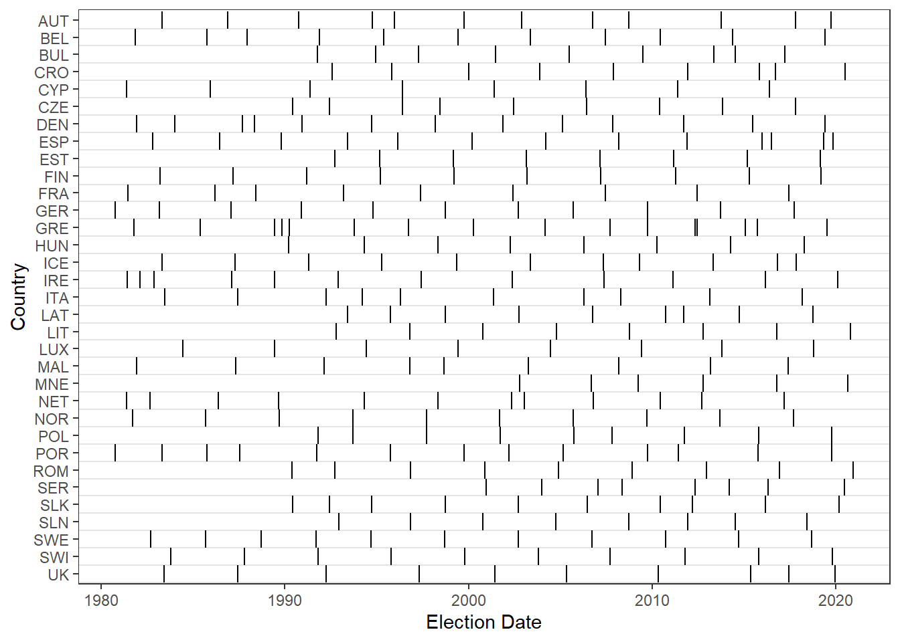
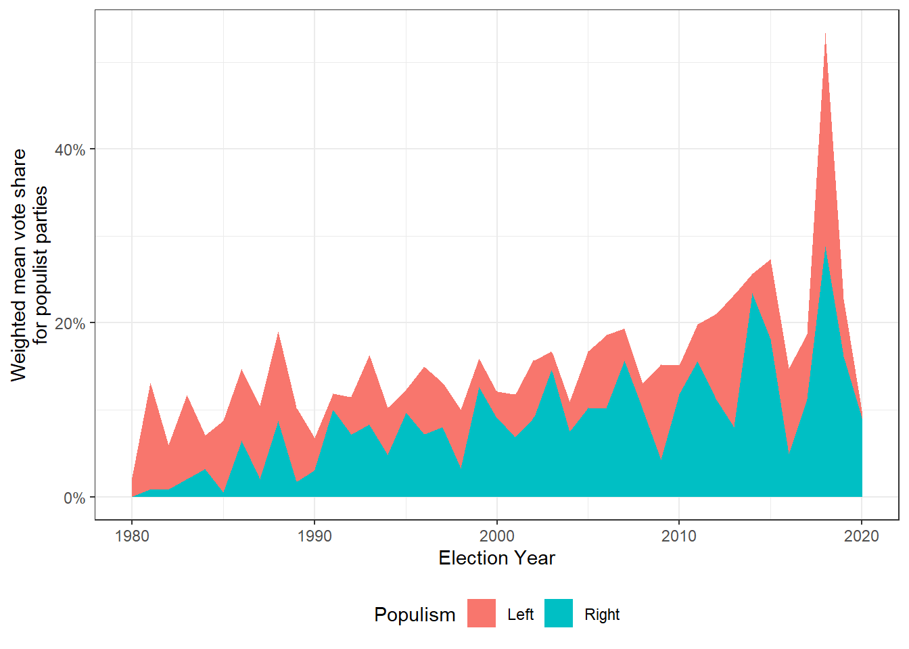
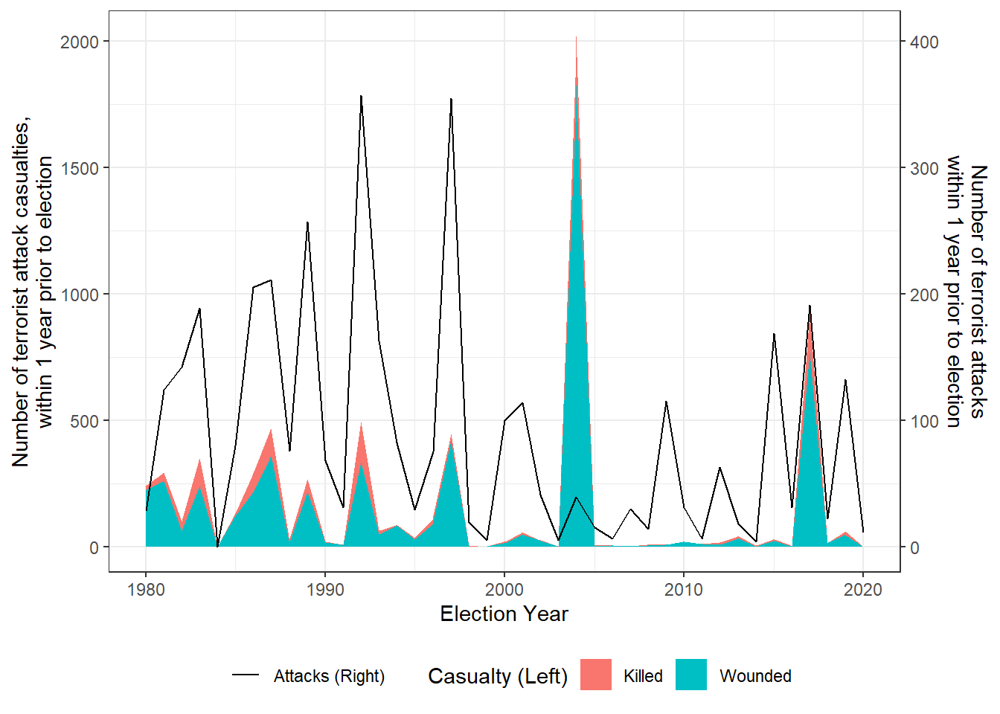
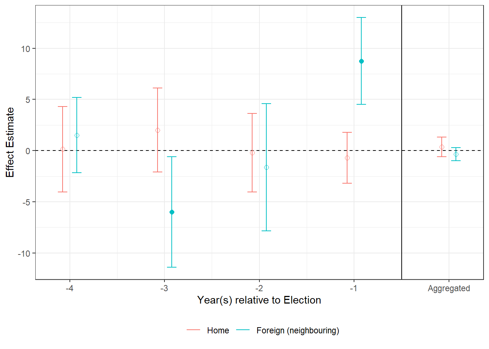
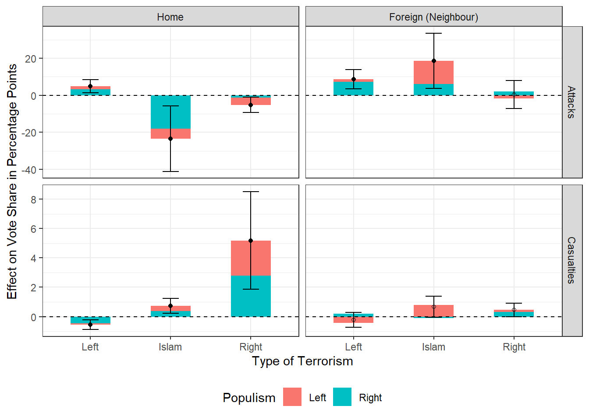
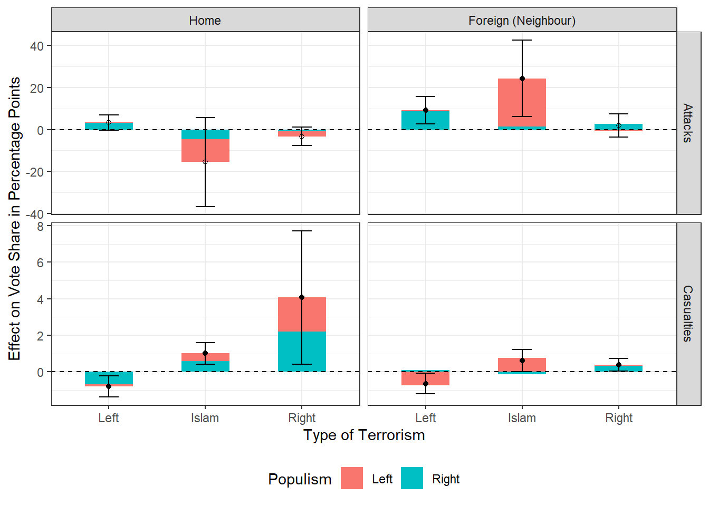

start_time <- Sys.time()
cat("Start time:", format(start_time, "%d/%m/%Y %H:%M:%S"), "\n")Does terrorism lead to populism?
GV482 Coursework log
Setup
Start time: 06/05/2024 13:02:16 need <- c('tidyverse','modelsummary','haven','fixest','kableExtra',"TAM","car") # list packages needed
have <- need %in% rownames(installed.packages()) # checks packages you have
if(any(!have)) install.packages(need[!have]) # install missing packages
invisible(lapply(need, library, character.only=T))
load("cleaned/data.RData")── Attaching core tidyverse packages ─────────────────────────────────────────────── tidyverse 2.0.0 ──
✔ dplyr 1.1.4 ✔ readr 2.1.4
✔ forcats 1.0.0 ✔ stringr 1.5.1
✔ ggplot2 3.5.0 ✔ tibble 3.2.1
✔ lubridate 1.9.2 ✔ tidyr 1.3.1
✔ purrr 1.0.2
── Conflicts ───────────────────────────────────────────────────────────────── tidyverse_conflicts() ──
✖ dplyr::filter() masks stats::filter()
✖ dplyr::lag() masks stats::lag()
ℹ Use the conflicted package to force all conflicts to become errors
Registered S3 methods overwritten by 'htmltools':
method from
print.html tools:rstudio
print.shiny.tag tools:rstudio
print.shiny.tag.list tools:rstudio
Registered S3 method overwritten by 'data.table':
method from
print.data.table
Registered S3 method overwritten by 'htmlwidgets':
method from
print.htmlwidget tools:rstudio
Attaching package: ‘kableExtra’
The following object is masked from ‘package:dplyr’:
group_rows
Loading required package: CDM
Loading required package: mvtnorm
**********************************
** CDM 8.2-6 (2022-08-25 15:43:23)
** Cognitive Diagnostic Models **
**********************************
* TAM 4.1-4 (2022-08-28 16:03:54)
Loading required package: carData
Attaching package: ‘car’
The following object is masked from ‘package:CDM’:
deltaMethod
The following object is masked from ‘package:dplyr’:
recode
The following object is masked from ‘package:purrr’:
some
Date Cleaning
data <- read_dta("PopulismTerrorism.dta")
data <- as_factor(data)
# clean population data
library(tidyverse)
pop_data <- data |> group_by(Country) |> distinct(Year, .keep_all=T) |> #remove elections in the same year
ungroup() |>
select(Country,Year, populationY1,populationY2,populationY3)
#min(data$Year) #1980
#max(data$Year) #2020
pop_data <- pop_data |>
group_by(Country) |>
complete(Year = seq(1977, 2020))
pop_data <- pop_data |>
group_by(Country) |>
mutate(populationY2 = dplyr::lead(populationY2,1),
populationY3 = dplyr::lead(populationY3,2))
pop_data <- pop_data |>
mutate(population = coalesce(populationY1, populationY2, populationY3)) |>
relocate(population,.after=Year)
pop_external <- read_csv("23850_additionaldatabase1.csv")Rows: 1922 Columns: 3
── Column specification ───────────────────────────────────────────────────────────────────────────────
Delimiter: ","
chr (1): Code
dbl (2): Year, population
ℹ Use `spec()` to retrieve the full column specification for this data.
ℹ Specify the column types or set `show_col_types = FALSE` to quiet this message.country_code_map <- c(
AT = "AUT", BE = "BEL", BG = "BUL", HR = "CRO", CY = "CYP", CZ = "CZE",
DK = "DEN", ES = "ESP", EE = "EST", FI = "FIN", FR = "FRA", DE_TOT = "GER",
EL = "GRE", HU = "HUN", IS = "ICE", IE = "IRE", IT = "ITA", LV = "LAT",
LT = "LIT", LU = "LUX", MT = "MAL", ME = "MNE", NL = "NET", NO = "NOR",
PL = "POL", PT = "POR", RO = "ROM", RS = "SER", SK = "SLK", SI = "SLN",
SE = "SWE", CH = "SWI", UK = "UK"
)
pop_data$Code <- names(country_code_map)[match(pop_data$Country, country_code_map)]
pop_data <- pop_data |> select(Country,Code,Year,population)
pop_external <- pop_external |> rename(population_external=population)
pop_data <- left_join(pop_data, pop_external, by=c("Code","Year"))
discrepancy <- pop_data |> filter(population != population_external)
rm(pop_external, discrepancy, country_code_map)
pop_data <- pop_data |> mutate(population=coalesce(population, population_external)) |>
select(-c(population_external,Code))
pop_data <- pop_data |> mutate(population=replace_na(population,0))
saveRDS(pop_data, "cleaned/pop_data.RDS")data <- read_dta("PopulismTerrorism.dta")
data <- as_factor(data)
#merge by population
pop_data <- readRDS("cleaned/pop_data.RDS")
#check missing population
sum(is.na(data$populationY1)) #3[1] 3sum(is.na(data$populationY2)) #3[1] 3sum(is.na(data$populationY3)) #6[1] 6pop_data <- pop_data |>
mutate(populationY1=population,
populationY2=dplyr::lag(population,1),
populationY3=dplyr::lag(population,2)) |>
select(-population)
data <- left_join(data, pop_data, by=c("Country","Year"),
suffix=c("",".y"))
data <- data |>
mutate(
populationY1 = coalesce(populationY1, populationY1.y),
populationY2 = coalesce(populationY2, populationY2.y),
populationY3 = coalesce(populationY3, populationY3.y)
) |>
select(-c(populationY1.y, populationY2.y, populationY3.y))data$PopulistTotal <- data$PopulistLeft+data$PopulistRight
#create vector of country names
countries <- unique(data$Country)
#create casualty variables
for (l in 1:4){
data[[paste0("HomencasY",l)]] <- data[[paste0("HomenkillY",l)]]+data[[paste0("HomenwoundY",l)]]
for (c in countries){
data[[paste0("ncas",c,"Y",l)]] <- data[[paste0("nkill",c,"Y",l)]]+data[[paste0("nwound",c,"Y",l)]]
}
}
for (l in 1:4){
data[[paste0("Homencas_leftY",l)]] <- data[[paste0("Homenkill_leftY",l)]]+data[[paste0("Homenwound_leftY",l)]]
data[[paste0("Homencas_rightY",l)]] <- data[[paste0("Homenkill_rightY",l)]]+data[[paste0("Homenwound_rightY",l)]]
data[[paste0("Homencas_IslClY",l)]] <- data[[paste0("Homenkill_IslClY",l)]]+data[[paste0("Homenwound_IslClY",l)]]
for (c in countries) {
data[[paste0("ncas_left",c,"Y",l)]] <- data[[paste0("nkill_left",c,"Y",l)]]+data[[paste0("nwound_left",c,"Y",l)]]
data[[paste0("ncas_right",c,"Y",l)]] <- data[[paste0("nkill_right",c,"Y",l)]]+data[[paste0("nwound_right",c,"Y",l)]]
data[[paste0("ncas_IslCl",c,"Y",l)]] <- data[[paste0("nkill_IslCl",c,"Y",l)]]+data[[paste0("nwound_IslCl",c,"Y",l)]]
}
}
data <- data |>
mutate(HomeAttackspopY1 = HomeAttacksY1 * 1000000 / populationY1,
HomeAttackspopY2 = HomeAttacksY2 * 1000000 / populationY1,
HomeAttackspopY3 = HomeAttacksY3 * 1000000 / populationY1,
HomeAttackspopY4 = HomeAttacksY4 * 1000000 / populationY1,
HomencaspopY1 = HomencasY1 * 1000000 / populationY1,
HomencaspopY2 = HomencasY2 * 1000000 / populationY1,
HomencaspopY3 = HomencasY3 * 1000000 / populationY1,
HomencaspopY4 = HomencasY4 * 1000000 / populationY1,
)#create a function for calculating the weighted sum
pop_data <- readRDS("cleaned/pop_data.RDS")
geo_index <- function(row, prefix, l) {
country <- row[['Country']]
year <- row[['Year']] |> as.numeric()
index <- 0
for (c in setdiff(countries, country)){
pop <- pop_data$population[pop_data$Country==c & pop_data$Year==(year-l+1)]/1000000
#find foreign pop
if(pop!=0){
index <- index + as.numeric(row[[paste0("Border",c)]]) *
as.numeric(row[[paste0(prefix,c,"Y",l)]])/pop
}
}
return(index)
}
#foreign attacks
data$geoAttacksY1 <- apply(data, 1, function(x) geo_index(x, "Attacks", 1))
data$geoAttacksY2 <- apply(data, 1, function(x) geo_index(x, "Attacks", 2))
data$geoAttacksY3 <- apply(data, 1, function(x) geo_index(x, "Attacks", 3))
data$geoAttacksY4 <- apply(data, 1, function(x) geo_index(x, "Attacks", 4))
#foreign proxy attacks
for (l in 1:4){
for (prefix in c("leftproxy","rightproxy","IslClaim")){
data[[paste0("geo",prefix,"Y",l)]] <- apply(data, 1, function(x) geo_index(x, prefix, l))
}
}
#foreign casualties
data$geoncasY1 <- apply(data, 1, function(x) geo_index(x, "ncas", 1))
data$geoncasY2 <- apply(data, 1, function(x) geo_index(x, "ncas", 2))
data$geoncasY3 <- apply(data, 1, function(x) geo_index(x, "ncas", 3))
data$geoncasY4 <- apply(data, 1, function(x) geo_index(x, "ncas", 4))
#foreign proxy casualties
for (l in 1:4){
for (prefix in c("ncas_left","ncas_right","ncas_IslCl")){
data[[paste0("geo",prefix,"Y",l)]] <- apply(data, 1, function(x) geo_index(x, prefix, l))
}
}#create a function for calculating the weighted sum
cul_index <- function(row, prefix, l) {
country <- row[['Country']]
year <- row[['Year']] |> as.numeric()
index <- 0
for (c in setdiff(countries, country)){
pop <- pop_data$population[pop_data$Country==c & pop_data$Year==(year-l+1)]/1000000
#find foreign pop
if(pop!=0){
index <- index + as.numeric(row[[paste0("percent_culturalsimilarity",c)]]) *
as.numeric(row[[paste0(prefix,c,"Y",l)]])/pop
}
}
return(index)
}
#foreign attacks
data$culAttacksY1 <- apply(data, 1, function(x) cul_index(x, "Attacks", 1))
data$culAttacksY2 <- apply(data, 1, function(x) cul_index(x, "Attacks", 2))
data$culAttacksY3 <- apply(data, 1, function(x) cul_index(x, "Attacks", 3))
data$culAttacksY4 <- apply(data, 1, function(x) cul_index(x, "Attacks", 4))
#foreign proxy attacks
for (l in 1:4){
for (prefix in c("leftproxy","rightproxy","IslClaim")){
data[[paste0("cul",prefix,"Y",l)]] <- apply(data, 1, function(x) cul_index(x, prefix, l))
}
}
#foreign casualties
data$culncasY1 <- apply(data, 1, function(x) cul_index(x, "ncas", 1))
data$culncasY2 <- apply(data, 1, function(x) cul_index(x, "ncas", 2))
data$culncasY3 <- apply(data, 1, function(x) cul_index(x, "ncas", 3))
data$culncasY4 <- apply(data, 1, function(x) cul_index(x, "ncas", 4))
#foreign proxy casualties
for (l in 1:4){
for (prefix in c("ncas_left","ncas_right","ncas_IslCl")){
data[[paste0("cul",prefix,"Y",l)]] <- apply(data, 1, function(x) cul_index(x, prefix, l))
}
}pop_data <- readRDS("cleaned/pop_data.RDS")
data <- data |>
mutate(
Homeleftproxy = (HomeleftproxyY1+HomeleftproxyY2+HomeleftproxyY3+HomeleftproxyY4)*1000000/populationY1,
Homencas_left = (Homencas_leftY1+Homencas_leftY2+Homencas_leftY3+Homencas_leftY4)*1000000/populationY1,
Homerightproxy = (HomerightproxyY1+HomerightproxyY2+HomerightproxyY3+HomerightproxyY4)*1000000/populationY1,
Homencas_right = (Homencas_rightY1+Homencas_rightY2+Homencas_rightY3+Homencas_rightY4)*1000000/populationY1,
HomeIslClaim = (HomeIslClaimY1+HomeIslClaimY2+HomeIslClaimY3+HomeIslClaimY4)*1000000/populationY1,
Homencas_IslCl = (Homencas_IslClY1+Homencas_IslClY2+Homencas_IslClY3+Homencas_IslClY4)*1000000/populationY1,
geoleftproxy = geoleftproxyY1+geoleftproxyY2+geoleftproxyY3+geoleftproxyY4,
geoncas_left = geoncas_leftY1+geoncas_leftY2+geoncas_leftY3+geoncas_leftY4,
georightproxy = georightproxyY1+georightproxyY2+georightproxyY3+georightproxyY4,
geoncas_right = geoncas_rightY1+geoncas_rightY2+geoncas_rightY3+geoncas_rightY4,
geoIslClaim = geoIslClaimY1+geoIslClaimY2+geoIslClaimY3+geoIslClaimY4,
geoncas_IslCl = geoncas_IslClY1+geoncas_IslClY2+geoncas_IslClY3+geoncas_IslClY4,
culleftproxy = culleftproxyY1+culleftproxyY2+culleftproxyY3+culleftproxyY4,
culncas_left = culncas_leftY1+culncas_leftY2+culncas_leftY3+culncas_leftY4,
culrightproxy = culrightproxyY1+culrightproxyY2+culrightproxyY3+culrightproxyY4,
culncas_right = culncas_rightY1+culncas_rightY2+culncas_rightY3+culncas_rightY4,
culIslClaim = culIslClaimY1+culIslClaimY2+culIslClaimY3+culIslClaimY4,
culncas_IslCl = culncas_IslClY1+culncas_IslClY2+culncas_IslClY3+culncas_IslClY4)
data <- data |>
mutate(
HomeAttackspop = HomeAttackspopY1+HomeAttackspopY2+HomeAttackspopY3+HomeAttackspopY4,
Homencaspop = HomencaspopY1+HomencaspopY2+HomencaspopY3+HomencaspopY4,
geoAttacks = geoAttacksY1+geoAttacksY2+geoAttacksY3+geoAttacksY4,
geoncas = geoncasY1+geoncasY2+geoncasY3+geoncasY4,
culAttacks = culAttacksY1+culAttacksY2+culAttacksY3+culAttacksY4,
culncas = culncasY1+culncasY2+culncasY3+culncasY4)
save(data, file = "cleaned/data.RData")Descriptive Statistics
load("cleaned/data.Rdata")
data|>
mutate(Country=forcats::fct_rev(Country),
ystart = as.numeric(Country) - 0.5,
yend = as.numeric(Country) + 0.5) |>
ggplot(aes(x=ElectionDate, y=Country)) + theme_bw() +
geom_segment(aes(y = ystart, yend = yend)) +
scale_y_discrete(limits = levels(forcats::fct_rev(data$Country))) +
geom_hline(aes(yintercept=ystart), alpha=0.1) + labs(x="Election Date") +
theme(panel.grid.major = element_blank(), panel.grid.minor = element_blank())

datasummary(PopulistLeft+PopulistRight+HomeAttacksY1+HomenkillY1+HomenwoundY1+
GrowthY1+UnemploymentY1+Export_penetrationY1+Import_penetrationY1+
Immigration_percentY1+Emigration_percentY1
~N+Mean+SD+Min+(Q1=P25)+Median+(Q3=P75)+Max,
data=data, output="latex")Warning: To compile a LaTeX document with this table, the following commands must be placed in the document preamble:
\usepackage{booktabs}
\usepackage{siunitx}
\newcolumntype{d}{S[
input-open-uncertainty=,
input-close-uncertainty=,
parse-numbers = false,
table-align-text-pre=false,
table-align-text-post=false
]}
To disable `siunitx` and prevent `modelsummary` from wrapping numeric entries in `\num{}`, call:
options("modelsummary_format_numeric_latex" = "plain")
This warning appears once per session.
\begin{table}
\centering
\begin{tabular}[t]{lrrrrrrrr}
\toprule
& N & Mean & SD & Min & Q1 & Median & Q3 & Max\\
\midrule
PopulistLeft & 329 & \num{6.41} & \num{8.80} & \num{0.00} & \num{0.40} & \num{2.40} & \num{9.70} & \num{44.88}\\
PopulistRight & 329 & \num{8.96} & \num{11.20} & \num{0.00} & \num{0.50} & \num{5.50} & \num{13.60} & \num{69.50}\\
HomeAttacksY1 & 329 & \num{11.10} & \num{32.42} & \num{0.00} & \num{0.00} & \num{1.00} & \num{4.00} & \num{305.00}\\
HomenkillY1 & 329 & \num{3.38} & \num{16.18} & \num{0.00} & \num{0.00} & \num{0.00} & \num{0.00} & \num{193.00}\\
HomenwoundY1 & 329 & \num{16.96} & \num{109.47} & \num{0.00} & \num{0.00} & \num{0.00} & \num{2.00} & \num{1825.00}\\
GrowthY1 & 231 & \num{6.25} & \num{6.91} & \num{-14.78} & \num{2.65} & \num{5.19} & \num{8.43} & \num{47.93}\\
UnemploymentY1 & 238 & \num{8.66} & \num{4.67} & \num{1.79} & \num{5.23} & \num{7.60} & \num{10.62} & \num{24.98}\\
Export\_penetrationY1 & 154 & \num{10.85} & \num{5.61} & \num{0.00} & \num{7.24} & \num{9.28} & \num{14.06} & \num{27.13}\\
Import\_penetrationY1 & 154 & \num{13.41} & \num{6.61} & \num{0.00} & \num{8.99} & \num{11.41} & \num{17.12} & \num{38.16}\\
Immigration\_percentY1 & 208 & \num{0.90} & \num{0.82} & \num{0.01} & \num{0.34} & \num{0.68} & \num{1.21} & \num{4.71}\\
Emigration\_percentY1 & 206 & \num{0.65} & \num{0.50} & \num{0.00} & \num{0.29} & \num{0.55} & \num{0.87} & \num{2.41}\\
\bottomrule
\end{tabular}
\end{table}q1 <- function(x) weighted_quantile(x, w=data$weight)[['25%']]
q3 <- function(x) weighted_quantile(x, w=data$weight)[['75%']]
datasummary(PopulistLeft+PopulistRight+HomeAttacksY1+HomenkillY1+HomenwoundY1+
GrowthY1+UnemploymentY1+Export_penetrationY1+Import_penetrationY1+
Immigration_percentY1+Emigration_percentY1
~N+(Mean=weighted_mean*Arguments(w=weight))+
(SD=weighted_sd*Arguments(w=weight))+
Min+(Q1=q1)+Median+(Q3=q3)+Max,
data=data, output="latex")\begin{table}
\centering
\begin{tabular}[t]{lrrrrrrrr}
\toprule
& N & Mean & SD & Min & Q1 & Median & Q3 & Max\\
\midrule
PopulistLeft & 329 & \num{7.00} & \num{8.19} & \num{0.00} & \num{0.40} & \num{2.40} & \num{10.36} & \num{44.88}\\
PopulistRight & 329 & \num{8.87} & \num{11.17} & \num{0.00} & \num{1.00} & \num{5.50} & \num{12.95} & \num{69.50}\\
HomeAttacksY1 & 329 & \num{31.17} & \num{55.08} & \num{0.00} & \num{1.00} & \num{1.00} & \num{34.00} & \num{305.00}\\
HomenkillY1 & 329 & \num{9.59} & \num{26.66} & \num{0.00} & \num{0.00} & \num{0.00} & \num{6.00} & \num{193.00}\\
HomenwoundY1 & 329 & \num{49.58} & \num{166.32} & \num{0.00} & \num{0.00} & \num{0.00} & \num{19.46} & \num{1825.00}\\
GrowthY1 & 231 & \num{6.05} & \num{6.30} & \num{-14.78} & \num{2.28} & \num{5.19} & \num{7.71} & \num{47.93}\\
UnemploymentY1 & 238 & \num{9.20} & \num{4.28} & \num{1.79} & \num{6.70} & \num{7.60} & \num{10.67} & \num{24.98}\\
Export\_penetrationY1 & 154 & \num{9.23} & \num{3.96} & \num{0.00} & \num{7.10} & \num{9.28} & \num{9.99} & \num{27.13}\\
Import\_penetrationY1 & 154 & \num{11.77} & \num{5.64} & \num{0.00} & \num{8.31} & \num{11.41} & \num{12.06} & \num{38.16}\\
Immigration\_percentY1 & 208 & \num{0.64} & \num{0.48} & \num{0.01} & \num{0.29} & \num{0.68} & \num{0.91} & \num{4.71}\\
Emigration\_percentY1 & 206 & \num{0.44} & \num{0.34} & \num{0.00} & \num{0.12} & \num{0.55} & \num{0.63} & \num{2.41}\\
\bottomrule
\end{tabular}
\end{table}data |>
group_by(Year) |>
summarise(PopulistLeft = weighted.mean(PopulistLeft, weight),
PopulistR = weighted.mean(PopulistRight, weight)) |>
pivot_longer(cols = c(PopulistLeft, PopulistR), names_to = "Populist", values_to = "Mean") |>
ggplot(aes(x = Year, y = Mean/100, fill = Populist)) + theme_bw() + geom_area() +
scale_fill_discrete(name = "Populism", labels = c("Left", "Right"))+
scale_y_continuous(labels = scales::percent) + theme(legend.position="bottom") +
labs(x = "Election Year", y = "Weighted mean vote share\nfor populist parties")

data |>
group_by(Year) |>
summarise(HomenkillY1 = sum(HomenkillY1), HomenwoundY1 = sum(HomenwoundY1), HomeAttacksY1=sum(HomeAttacksY1)) |>
pivot_longer(cols = c(HomenkillY1, HomenwoundY1), names_to = "Attack", values_to = "Mean") |>
ggplot(aes(x = Year, y = Mean, fill = Attack)) + theme_bw() + geom_area() +
geom_line(aes(y = HomeAttacksY1*5, color="Attacks")) + theme(legend.position="bottom") +
scale_fill_discrete(name = "Casualty (Left)", labels = c("Killed", "Wounded"))+
scale_color_manual(name = "", values = "black", labels = "Attacks (Right)") +
labs(x = "Election Year", y = "Number of terrorist attack casualties,\nwithin 1 year prior to election") +
scale_y_continuous( # plot the attacks in a different axis from the casualties
sec.axis = sec_axis(~ . / 5, name = "Number of terrorist attacks\nwithin 1 year prior to election")
)

Main Analysis
load("cleaned/data.RData")
outcome <- "PopulistTotal~"
fe <- "|Country+Year"
homeattacks <- "HomeAttackspop"
homecasualty <- "Homencaspop"
geoattacks <- "+geoAttacks"
geocasualty <- "+geoncas"
culattacks <- "+culAttacks"
culcasualty <- "+culncas"
controls <- "+GrowthY1+GrowthY2+GrowthY3+UnemploymentY1+UnemploymentY2+UnemploymentY3+
Export_penetrationY1+Export_penetrationY2+Export_penetrationY3+
Import_penetrationY1+Import_penetrationY2+Import_penetrationY3+
Immigration_percentY1+Immigration_percentY2+Immigration_percentY3+
Emigration_percentY1+Emigration_percentY2+Emigration_percentY3"
#attacks
reg_collapsed_attack_none <- feols(as.formula(paste0(outcome,homeattacks,fe)), weights=data$weight,data)
reg_collapsed_attack_control <- feols(as.formula(paste0(outcome,homeattacks,controls,fe)), weights=data$weight,data)NOTE: 204 observations removed because of NA values (RHS: 204).reg_collapsed_attack_geo <- feols(as.formula(paste0(outcome,homeattacks,geoattacks,controls,fe)), weights=data$weight,data)NOTE: 204 observations removed because of NA values (RHS: 204).reg_collapsed_attack_cul <- feols(as.formula(paste0(outcome,homeattacks,culattacks,controls,fe)), weights=data$weight,data)NOTE: 204 observations removed because of NA values (RHS: 204).#casualties
reg_collapsed_casualty_none <- feols(as.formula(paste0(outcome,homecasualty,fe)), weights=data$weight,data)NOTE: 204 observations removed because of NA values (RHS: 204).reg_collapsed_casualty_control <- feols(as.formula(paste0(outcome,homecasualty,controls,fe)), weights=data$weight,data)NOTE: 204 observations removed because of NA values (RHS: 204).reg_collapsed_casualty_geo <- feols(as.formula(paste0(outcome,homecasualty,geocasualty,controls,fe)), weights=data$weight,data)NOTE: 204 observations removed because of NA values (RHS: 204).reg_collapsed_casualty_cul <- feols(as.formula(paste0(outcome,homecasualty,culcasualty,controls,fe)), weights=data$weight,data)NOTE: 204 observations removed because of NA values (RHS: 204).twfe_collapsed <- list(reg_collapsed_attack_none, reg_collapsed_attack_control,
reg_collapsed_attack_geo, reg_collapsed_attack_cul,
reg_collapsed_casualty_none, reg_collapsed_casualty_control,
reg_collapsed_casualty_geo, reg_collapsed_casualty_cul)
glance_custom.fixest <- function(x, ...) {
data.frame(
"controls" = ifelse("GrowthY1" %in% names(coef(x)),"Yes","No"),
'weighted'= "Yes",
'CountryFE' = "Yes",
'YearFE' = "Yes"
)
}
gof_map <- list(list("raw"="controls", clean="Controls", fmt=NULL),
list("raw"="weighted", clean="Weighted", fmt=NULL),
list("raw" = "nobs", "clean" = "Obs", "fmt" = 0),
list("raw" = "adj.r.squared", "clean" = "$R^2$ Adj.", "fmt" = 3),
list("raw" = "r2.within.adjusted", "clean" = "$R^2$ Within Adj.", "fmt" = 3),
list("raw"="CountryFE", "clean" = "Country FE", "fmt" = NULL),
list("raw"="YearFE", "clean" = "Year FE", "fmt" = NULL))
coef_map <- c("HomeAttackspop"="HomeTerrorism",
"Homencaspop"="HomeTerrorism",
"geoAttacks"="ForeignTerrorism",
"geoncas"="ForeignTerrorism",
"culAttacks"="ForeignTerrorism",
"culncas"="ForeignTerrorism")
twfe_collapsed_table <- msummary(twfe_collapsed, escape=F,
output="latex",
notes = "Note: Standard errors are clustered at the Country level ($N=33$).",
gof_map = gof_map,
coef_map=coef_map,
stars=T) |>
kable_styling(latex_options="scale_down") |>
add_header_above(c(" "=1,"$c=0$"=2,"$c=c^{geo}$"=1,"$c=c^{cul}$",
"$c=0$"=2,"$c=c^{geo}$"=1,"$c=c^{cul}$"),
escape=F) |>
add_header_above(c(" "=1,"Total Attacks per Million Population"=4,"Total Casualties per Million Population"=4))
save(gof_map, coef_map, glance_custom.fixest,
gen_stars, twfe_collapsed_table, file="output/twfe_collapsed.RData") #save for quarto
save(twfe_collapsed, file="output/twfe_collapsed_reg.RData") #save for quartoload("cleaned/data.RData")
outcome <- "PopulistTotal~"
fe <- "|Country+Year"
homeattacks <- "HomeAttackspopY1+HomeAttackspopY2+HomeAttackspopY3+HomeAttackspopY4"
homecasualty <- "HomencaspopY1+HomencaspopY2+HomencaspopY3+HomencaspopY4"
geoattacks <- "+geoAttacksY1+geoAttacksY2+geoAttacksY3+geoAttacksY4"
geocasualty <- "+geoncasY1+geoncasY2+geoncasY3+geoncasY4"
culattacks <- "+culAttacksY1+culAttacksY2+culAttacksY3+culAttacksY4"
culcasualty <- "+culncasY1+culncasY2+culncasY3+culncasY4"
controls <- "+GrowthY1+GrowthY2+GrowthY3+UnemploymentY1+UnemploymentY2+UnemploymentY3+
Export_penetrationY1+Export_penetrationY2+Export_penetrationY3+
Import_penetrationY1+Import_penetrationY2+Import_penetrationY3+
Immigration_percentY1+Immigration_percentY2+Immigration_percentY3+
Emigration_percentY1+Emigration_percentY2+Emigration_percentY3"
#attacks
reg_total_attack_none <- feols(as.formula(paste0(outcome,homeattacks,fe)), weights=data$weight,data)
reg_total_attack_control <- feols(as.formula(paste0(outcome,homeattacks,controls,fe)), weights=data$weight,data)NOTE: 204 observations removed because of NA values (RHS: 204).reg_total_attack_geo <- feols(as.formula(paste0(outcome,homeattacks,geoattacks,controls,fe)), weights=data$weight,data)NOTE: 204 observations removed because of NA values (RHS: 204).reg_total_attack_cul <- feols(as.formula(paste0(outcome,homeattacks,culattacks,controls,fe)), weights=data$weight,data)NOTE: 204 observations removed because of NA values (RHS: 204).#casualties
reg_total_casualty_none <- feols(as.formula(paste0(outcome,homecasualty,fe)), weights=data$weight,data)
reg_total_casualty_control <- feols(as.formula(paste0(outcome,homecasualty,controls,fe)), weights=data$weight,data)NOTE: 204 observations removed because of NA values (RHS: 204).reg_total_casualty_geo <- feols(as.formula(paste0(outcome,homecasualty,geocasualty,controls,fe)), weights=data$weight,data)NOTE: 204 observations removed because of NA values (RHS: 204).reg_total_casualty_cul <- feols(as.formula(paste0(outcome,homecasualty,culcasualty,controls,fe)), weights=data$weight,data)NOTE: 204 observations removed because of NA values (RHS: 204).twfe_total <- list(reg_total_attack_none, reg_total_attack_control,
reg_total_attack_geo, reg_total_attack_cul,
reg_total_casualty_none, reg_total_casualty_control,
reg_total_casualty_geo, reg_total_casualty_cul)
for (i in 1:length(twfe_total)){
twfe_total[[i]]$df.residual <- parameters::degrees_of_freedom(twfe_total[[i]])
home <- names(coef(twfe_total[[i]]))[grepl("Home",names(coef(twfe_total[[i]])))]
twfe_total[[i]]$homeF <- lht(twfe_total[[i]],test='F',
c(paste0(home,"=0")))
foreign <- character()
foreign <- names(coef(twfe_total[[i]]))[grepl("geo|cul",names(coef(twfe_total[[i]])))]
if (length(foreign)>0){
twfe_total[[i]]$foreignF <- lht(twfe_total[[i]],test='F',
c(paste0(foreign,"=0")))
}
}
gen_stars <- function(p){
if (p<0.001){
return("***")
} else if (p<0.01){
return("**")
} else if (p<0.05){
return("*")
} else if (p<0.1){
return("+")
} else {
return("")
}
}
glance_custom.fixest <- function(x, ...) {
data.frame(
"controls" = ifelse("GrowthY1" %in% names(coef(x)),
"Yes","No"),
'weighted'= "Yes",
'CountryFE' = "Yes",
'YearFE' = "Yes",
'HomeF' = paste0(round(x$homeF[2,3],2),gen_stars(x$homeF[2,4]),
" [",x$homeF[2,2],",",x$homeF[2,1],"]"),
"ForeignF" = if(!"foreignF" %in% names(x)){
""
} else {
paste0(round(x$foreignF[2,3],2),gen_stars(x$foreignF[2,4]),
" [",x$foreignF[2,2],",",x$foreignF[2,1],"]")
}
)
}
gof_map <- list(list("raw"="controls", clean="Controls", fmt=NULL),
list("raw"="weighted", clean="Weighted", fmt=NULL),
list("raw"="HomeF", "clean" = "$F_{home}$", "fmt"=NULL),
list("raw"="ForeignF", "clean" = "$F_{foreign}$", "fmt"=NULL),
list("raw" = "nobs", "clean" = "Obs", "fmt" = 0),
list("raw" = "adj.r.squared", "clean" = "$R^2$ Adj.", "fmt" = 3),
list("raw" = "r2.within.adjusted", "clean" = "$R^2$ Within Adj.", "fmt" = 3),
list("raw"="CountryFE", "clean" = "Country FE", "fmt" = NULL),
list("raw"="YearFE", "clean" = "Year FE", "fmt" = NULL))
coef_map <- c("HomeAttackspopY1"="HomeTerrorism$_{t-1}$",
"HomeAttackspopY2"="HomeTerrorism$_{t-2}$",
"HomeAttackspopY3"="HomeTerrorism$_{t-3}$",
"HomeAttackspopY4"="HomeTerrorism$_{t-4}$",
"HomencaspopY1"="HomeTerrorism$_{t-1}$",
"HomencaspopY2"="HomeTerrorism$_{t-2}$",
"HomencaspopY3"="HomeTerrorism$_{t-3}$",
"HomencaspopY4"="HomeTerrorism$_{t-4}$",
"geoAttacksY1"="ForeignTerrorism$_{t-1}$",
"geoAttacksY2"="ForeignTerrorism$_{t-2}$",
"geoAttacksY3"="ForeignTerrorism$_{t-3}$",
"geoAttacksY4"="ForeignTerrorism$_{t-4}$",
"geoncasY1"="ForeignTerrorism$_{t-1}$",
"geoncasY2"="ForeignTerrorism$_{t-2}$",
"geoncasY3"="ForeignTerrorism$_{t-3}$",
"geoncasY4"="ForeignTerrorism$_{t-4}$",
"culAttacksY1"="ForeignTerrorism$_{t-1}$",
"culAttacksY2"="ForeignTerrorism$_{t-2}$",
"culAttacksY3"="ForeignTerrorism$_{t-3}$",
"culAttacksY4"="ForeignTerrorism$_{t-4}$",
"culncasY1"="ForeignTerrorism$_{t-1}$",
"culncasY2"="ForeignTerrorism$_{t-2}$",
"culncasY3"="ForeignTerrorism$_{t-3}$",
"culncasY4"="ForeignTerrorism$_{t-4}$",
"HomeC" = "HomeTerrorism",
"ForeinC" = "ForeignTerrorism")
twfe_table <- msummary(twfe_total, escape=F,
output="latex",
notes = "Note: Standard errors are clustered at the Country level ($N=33$).",
gof_map = gof_map,
coef_map=coef_map,
stars=T) |>
kable_styling(full_width = F) |>
add_header_above(c(" "=1,"$c=0$"=2,"$c=c^{geo}$"=1,"$c=c^{cul}$",
"$c=0$"=2,"$c=c^{geo}$"=1,"$c=c^{cul}$"),
escape=F) |>
add_header_above(c(" "=1,"Total Attacks per Million Population"=4,"Total Casualties per Million Population"=4))
save(twfe_total, gof_map, coef_map, glance_custom.fixest,
gen_stars, twfe_table, file="output/twfe_main.RData") #save for quartoload("output/twfe_main.RData") #main results
load("output/twfe_collapsed_reg.RData") #collapsed results
col3_main <- get_estimates(twfe_total[[3]])
col7_collapsed <- get_estimates(twfe_collapsed[[7]])
col8_main <- get_estimates(twfe_total[[8]])
data_complete <- data[twfe_total[[2]][["obs_selection"]][["obsRemoved"]],]
(sd_geoAttacksY1 <- weighted_sd(data_complete$geoAttacksY1, w=data_complete$weight))[1] 1.361625[1] 1.361625(sd_PopulistTotal <- weighted_sd(data_complete$PopulistTotal, w=data_complete$weight))[1] 16.37609(sd_geoncas <- weighted_sd(data_complete$geoncas, w=data_complete$weight))[1] 8.881413results <- rbind(get_estimates(twfe_total[[3]])[1:8,c(1,2,5,6)],
get_estimates(twfe_collapsed[[3]])[1:2,c(1,2,5,6)])
results <- results[c(1:4,9,5:8,10),] #change order
results$region <- c(rep("Home",5),rep("Foreign (neighbouring)",5))
results$time <- c(-1:-4,0)
results <- results |> mutate(significant=(conf.low>0|conf.high<0),
region=factor(region, levels=c("Home","Foreign (neighbouring)")))
ggplot(results, aes(x=time, y=estimate, color=region, shape=significant)) + theme_bw() +
geom_hline(yintercept = 0, linetype="dashed")+
geom_vline(xintercept = -0.5, linetype="solid")+
geom_point(position = position_dodge(.3),
size=2,show.legend=F) +
scale_shape_manual(values=c(1, 16)) +
geom_errorbar(aes(ymin=conf.low,ymax=conf.high), width=.2,
position = position_dodge(.3)) +
theme(legend.position = "bottom") +
labs(x="Year(s) relative to Election",y="Effect Estimate",color="") +
scale_x_continuous(
breaks = sort(unique(c(results$time))),
labels = function(x) ifelse(x == 0, "Aggregated", as.character(x))
)

load("output/twfe_collapsed.RData")
twfe_collapsed_table\begin{table}
\centering
\begin{tabular}[t]{lrrrrrrrr}
\toprule
& N & Mean & SD & Min & Q1 & Median & Q3 & Max\\
\midrule
PopulistLeft & 329 & \num{7.00} & \num{8.19} & \num{0.00} & \num{0.40} & \num{2.40} & \num{10.36} & \num{44.88}\\
PopulistRight & 329 & \num{8.87} & \num{11.17} & \num{0.00} & \num{1.00} & \num{5.50} & \num{12.95} & \num{69.50}\\
HomeAttacksY1 & 329 & \num{31.17} & \num{55.08} & \num{0.00} & \num{1.00} & \num{1.00} & \num{34.00} & \num{305.00}\\
HomenkillY1 & 329 & \num{9.59} & \num{26.66} & \num{0.00} & \num{0.00} & \num{0.00} & \num{6.00} & \num{193.00}\\
HomenwoundY1 & 329 & \num{49.58} & \num{166.32} & \num{0.00} & \num{0.00} & \num{0.00} & \num{19.46} & \num{1825.00}\\
GrowthY1 & 231 & \num{6.05} & \num{6.30} & \num{-14.78} & \num{2.28} & \num{5.19} & \num{7.71} & \num{47.93}\\
UnemploymentY1 & 238 & \num{9.20} & \num{4.28} & \num{1.79} & \num{6.70} & \num{7.60} & \num{10.67} & \num{24.98}\\
Export\_penetrationY1 & 154 & \num{9.23} & \num{3.96} & \num{0.00} & \num{7.10} & \num{9.28} & \num{9.99} & \num{27.13}\\
Import\_penetrationY1 & 154 & \num{11.77} & \num{5.64} & \num{0.00} & \num{8.31} & \num{11.41} & \num{12.06} & \num{38.16}\\
Immigration\_percentY1 & 208 & \num{0.64} & \num{0.48} & \num{0.01} & \num{0.29} & \num{0.68} & \num{0.91} & \num{4.71}\\
Emigration\_percentY1 & 206 & \num{0.44} & \num{0.34} & \num{0.00} & \num{0.12} & \num{0.55} & \num{0.63} & \num{2.41}\\
\bottomrule
\end{tabular}
\end{table}
> #| eval: true
> #| message: false
> #| warning: false
> #| error: false
> need <- c('tidyverse','modelsummary','haven','fixest','kableExtra',"TAM","car") # list packages needed
> have <- need %in% rownames(installed.packages()) # checks packages you have
> if(any(!have)) install.packages(need[!have]) # install missing packages
> invisible(lapply(need, library, character.only=T))
> #| label: tbl-collapsed
> #| tbl-cap: "Main TWFE regression results. (Dep Var: Total populist vote share)"
> #| tbl-pos: h
> load("output/twfe_collapsed.RData")
> twfe_collapsed_table
> twfe_collapsed_table
\begin{table}
\centering
\resizebox{\linewidth}{!}{
\begin{tabular}[t]{lcccccccc}
\toprule
\multicolumn{1}{c}{ } & \multicolumn{4}{c}{Total Attacks per Million Population} & \multicolumn{4}{c}{Total Casualties per Million Population} \\
\cmidrule(l{3pt}r{3pt}){2-5} \cmidrule(l{3pt}r{3pt}){6-9}
\multicolumn{1}{c}{ } & \multicolumn{2}{c}{$c=0$} & \multicolumn{1}{c}{$c=c^{geo}$} & \multicolumn{1}{c}{$c=c^{cul}$} & \multicolumn{2}{c}{$c=0$} & \multicolumn{1}{c}{$c=c^{geo}$} & \multicolumn{1}{c}{$c=c^{cul}$} \\
\cmidrule(l{3pt}r{3pt}){2-3} \cmidrule(l{3pt}r{3pt}){4-4} \cmidrule(l{3pt}r{3pt}){5-5} \cmidrule(l{3pt}r{3pt}){6-7} \cmidrule(l{3pt}r{3pt}){8-8} \cmidrule(l{3pt}r{3pt}){9-9}
& (1) & (2) & (3) & (4) & (5) & (6) & (7) & (8)\\
\midrule
HomeTerrorism & \num{0.731}+ & \num{0.288} & \num{0.366} & \num{0.028} & \num{0.002} & \num{0.074} & \num{0.040} & \num{0.042}\\
& (\num{0.388}) & (\num{0.492}) & (\num{0.464}) & (\num{0.468}) & (\num{0.091}) & (\num{0.118}) & (\num{0.115}) & (\num{0.130})\\
ForeignTerrorism & & & \num{-0.348} & \num{-0.333} & & & \num{0.303}* & \num{-0.073}\\
& & & (\num{0.307}) & (\num{0.245}) & & & (\num{0.118}) & (\num{0.124})\\
\midrule
Controls & No & Yes & Yes & Yes & No & Yes & Yes & Yes\\
Weighted & Yes & Yes & Yes & Yes & Yes & Yes & Yes & Yes\\
Obs & \num{329} & \num{125} & \num{125} & \num{125} & \num{329} & \num{125} & \num{125} & \num{125}\\
$R^2$ Adj. & \num{0.661} & \num{0.845} & \num{0.846} & \num{0.844} & \num{0.645} & \num{0.845} & \num{0.859} & \num{0.843}\\
$R^2$ Within Adj. & \num{0.040} & \num{-0.003} & \num{0.001} & \num{-0.008} & \num{-0.004} & \num{-0.002} & \num{0.083} & \num{-0.016}\\
Country FE & Yes & Yes & Yes & Yes & Yes & Yes & Yes & Yes\\
Year FE & Yes & Yes & Yes & Yes & Yes & Yes & Yes & Yes\\
\bottomrule
\multicolumn{9}{l}{\rule{0pt}{1em}+ p $<$ 0.1, * p $<$ 0.05, ** p $<$ 0.01, *** p $<$ 0.001}\\
\multicolumn{9}{l}{\rule{0pt}{1em}Note: Standard errors are clustered at the Country level ($N=33$).}\\
\end{tabular}}
\end{table}twfe_table\begin{table}
\centering
\begin{tabular}[t]{lcccccccc}
\toprule
\multicolumn{1}{c}{ } & \multicolumn{4}{c}{Total Attacks per Million Population} & \multicolumn{4}{c}{Total Casualties per Million Population} \\
\cmidrule(l{3pt}r{3pt}){2-5} \cmidrule(l{3pt}r{3pt}){6-9}
\multicolumn{1}{c}{ } & \multicolumn{2}{c}{$c=0$} & \multicolumn{1}{c}{$c=c^{geo}$} & \multicolumn{1}{c}{$c=c^{cul}$} & \multicolumn{2}{c}{$c=0$} & \multicolumn{1}{c}{$c=c^{geo}$} & \multicolumn{1}{c}{$c=c^{cul}$} \\
\cmidrule(l{3pt}r{3pt}){2-3} \cmidrule(l{3pt}r{3pt}){4-4} \cmidrule(l{3pt}r{3pt}){5-5} \cmidrule(l{3pt}r{3pt}){6-7} \cmidrule(l{3pt}r{3pt}){8-8} \cmidrule(l{3pt}r{3pt}){9-9}
& (1) & (2) & (3) & (4) & (5) & (6) & (7) & (8)\\
\midrule
HomeTerrorism$_{t-1}$ & \num{1.295} & \num{-0.894} & \num{-0.695} & \num{-0.139} & \num{-0.206}+ & \num{-0.065} & \num{-0.036} & \num{0.023}\\
& (\num{1.407}) & (\num{0.841}) & (\num{1.211}) & (\num{0.875}) & (\num{0.105}) & (\num{0.244}) & (\num{0.258}) & (\num{0.241})\\
HomeTerrorism$_{t-2}$ & \num{-0.880} & \num{-1.991} & \num{-0.213} & \num{-4.642}* & \num{0.167} & \num{0.539} & \num{-1.854}* & \num{1.094}\\
& (\num{1.601}) & (\num{1.503}) & (\num{1.866}) & (\num{1.942}) & (\num{0.232}) & (\num{0.555}) & (\num{0.770}) & (\num{0.661})\\
HomeTerrorism$_{t-3}$ & \num{1.168} & \num{0.808} & \num{2.008} & \num{-0.871} & \num{0.566} & \num{1.408}+ & \num{0.878} & \num{1.008}\\
& (\num{1.160}) & (\num{2.862}) & (\num{1.994}) & (\num{2.559}) & (\num{0.482}) & (\num{0.746}) & (\num{0.733}) & (\num{0.778})\\
HomeTerrorism$_{t-4}$ & \num{1.210} & \num{2.018} & \num{0.144} & \num{2.247} & \num{-0.035} & \num{-0.038} & \num{-0.170} & \num{-0.064}\\
& (\num{0.837}) & (\num{2.025}) & (\num{2.030}) & (\num{1.784}) & (\num{0.104}) & (\num{0.209}) & (\num{0.188}) & (\num{0.175})\\
ForeignTerrorism$_{t-1}$ & & & \num{8.755}*** & \num{0.546} & & & \num{0.100} & \num{0.066}\\
& & & (\num{2.062}) & (\num{0.734}) & & & (\num{0.094}) & (\num{0.210})\\
ForeignTerrorism$_{t-2}$ & & & \num{-1.626} & \num{-2.001}* & & & \num{1.096}* & \num{-0.031}\\
& & & (\num{3.024}) & (\num{0.739}) & & & (\num{0.399}) & (\num{0.215})\\
ForeignTerrorism$_{t-3}$ & & & \num{-5.984}* & \num{-1.679}+ & & & \num{0.660}+ & \num{-0.574}**\\
& & & (\num{2.624}) & (\num{0.971}) & & & (\num{0.384}) & (\num{0.172})\\
ForeignTerrorism$_{t-4}$ & & & \num{1.517} & \num{-0.688} & & & \num{0.169} & \num{0.208}\\
& & & (\num{1.785}) & (\num{0.500}) & & & (\num{0.168}) & (\num{0.145})\\
\midrule
Controls & No & Yes & Yes & Yes & No & Yes & Yes & Yes\\
Weighted & Yes & Yes & Yes & Yes & Yes & Yes & Yes & Yes\\
$F_{home}$ & 1.33 [4,32] & 2.55+ [4,26] & 1.15 [4,26] & 3.09* [4,26] & 1.31 [4,32] & 1.06 [4,26] & 3* [4,26] & 1.2 [4,26]\\
$F_{foreign}$ & & & 6.2** [4,26] & 2.74+ [4,26] & & & 3.18* [4,26] & 6.74*** [4,26]\\
Obs & \num{329} & \num{125} & \num{125} & \num{125} & \num{329} & \num{125} & \num{125} & \num{125}\\
$R^2$ Adj. & \num{0.659} & \num{0.846} & \num{0.868} & \num{0.858} & \num{0.647} & \num{0.849} & \num{0.866} & \num{0.881}\\
$R^2$ Within Adj. & \num{0.036} & \num{0.001} & \num{0.143} & \num{0.079} & \num{0.003} & \num{0.021} & \num{0.130} & \num{0.231}\\
Country FE & Yes & Yes & Yes & Yes & Yes & Yes & Yes & Yes\\
Year FE & Yes & Yes & Yes & Yes & Yes & Yes & Yes & Yes\\
\bottomrule
\multicolumn{9}{l}{\rule{0pt}{1em}+ p $<$ 0.1, * p $<$ 0.05, ** p $<$ 0.01, *** p $<$ 0.001}\\
\multicolumn{9}{l}{\rule{0pt}{1em}Note: Standard errors are clustered at the Country level ($N=33$).}\\
\end{tabular}
\end{table}Ideology-disaggregated Results
outcome <- "PopulistTotal~"
homeattacks <- "Homeleftproxy+Homerightproxy+HomeIslClaim"
fe <- "|Country+Year"
reg_total_attack_none <- feols(as.formula(paste0(outcome,homeattacks,fe)), weights=data$weight,data)
controls <- "+GrowthY1+GrowthY2+GrowthY3+UnemploymentY1+UnemploymentY2+UnemploymentY3+
Export_penetrationY1+Export_penetrationY2+Export_penetrationY3+
Import_penetrationY1+Import_penetrationY2+Import_penetrationY3+
Immigration_percentY1+Immigration_percentY2+Immigration_percentY3+
Emigration_percentY1+Emigration_percentY2+Emigration_percentY3"
reg_total_attack_control <- feols(as.formula(paste0(outcome,homeattacks,controls,fe)), weights=data$weight,data)NOTE: 204 observations removed because of NA values (RHS: 204).geoattacks <- "+geoleftproxy+georightproxy+geoIslClaim"
reg_total_attack_geo <- feols(as.formula(paste0(outcome,homeattacks,geoattacks,controls,fe)), weights=data$weight,data)NOTE: 204 observations removed because of NA values (RHS: 204).culattacks <- "+culleftproxy+culrightproxy+culIslClaim"
reg_total_attack_cul <- feols(as.formula(paste0(outcome,homeattacks,culattacks,controls,fe)), weights=data$weight,data)NOTE: 204 observations removed because of NA values (RHS: 204).homecasualty <- "Homencas_left+Homencas_right+Homencas_IslCl"
geocasualty <- "+geoncas_left+geoncas_right+geoncas_IslCl"
culcasualty <- "+culncas_left+culncas_right+culncas_IslCl"
reg_total_casualty_none <- feols(as.formula(paste0(outcome,homecasualty,fe)), weights=data$weight,data)
reg_total_casualty_control <- feols(as.formula(paste0(outcome,homecasualty,controls,fe)), weights=data$weight,data)NOTE: 204 observations removed because of NA values (RHS: 204).reg_total_casualty_geo <- feols(as.formula(paste0(outcome,homecasualty,geocasualty,controls,fe)), weights=data$weight,data)NOTE: 204 observations removed because of NA values (RHS: 204).reg_total_casualty_cul <- feols(as.formula(paste0(outcome,homecasualty,culcasualty,controls,fe)), weights=data$weight,data)NOTE: 204 observations removed because of NA values (RHS: 204).twfe_total <- list(reg_total_attack_control,
reg_total_attack_geo, reg_total_attack_cul,
reg_total_casualty_control,
reg_total_casualty_geo, reg_total_casualty_cul)
for (i in 1:length(twfe_total)){
twfe_total[[i]]$df.residual <- parameters::degrees_of_freedom(twfe_total[[i]])
home <- names(coef(twfe_total[[i]]))[grepl("Home",names(coef(twfe_total[[i]])))]
twfe_total[[i]]$homeF <- lht(twfe_total[[i]],test='F',
c(paste0(home,"=0")))
foreign <- character()
foreign <- names(coef(twfe_total[[i]]))[grepl("geo|cul",names(coef(twfe_total[[i]])))]
if (length(foreign)>0){
twfe_total[[i]]$foreignF <- lht(twfe_total[[i]],test='F',
c(paste0(foreign,"=0"))
)
}
}
coef_map <- c("Homeleftproxy"="HomeLeft",
"Homencas_left"="HomeLeft",
"Homerightproxy"="HomeRight",
"Homencas_right"="HomeRight",
"HomeIslClaim"="HomeIslam",
"Homencas_IslCl"="HomeIslam",
"geoleftproxy"="ForeignLeft",
"geoncas_left"="ForeignLeft",
"georightproxy"="ForeignRight",
"geoncas_right"="ForeignRight",
"geoIslClaim"="ForeignIslam",
"geoncas_IslCl"="ForeignIslam",
"culleftproxy"="ForeignLeft",
"culncas_left"="ForeignLeft",
"culrightproxy"="ForeignRight",
"culncas_right"="ForeignRight",
"culIslClaim"="ForeignIslam",
"culncas_IslCl"="ForeignIslam")
twfe_total_table <- msummary(twfe_total, escape=F,
output="latex",
notes = "Note: Standard errors are clustered at the Country level ($N=33$).",
gof_map = gof_map,
coef_map=coef_map,
stars=T) |>
kable_styling(latex_options="scale_down") |>
add_header_above(c(" "=1,"$c=0$"=1,"$c=c^{geo}$"=1,"$c=c^{cul}$"=1,
"$c=0$"=1,"$c=c^{geo}$"=1,"$c=c^{cul}$"=1), escape=F) |>
add_header_above(c(" "=1,"Total Attacks per Million Population"=3,"Total Casualties per Million Population"=3), escape=F)
save(twfe_total, gof_map, coef_map, glance_custom.fixest,
gen_stars, twfe_total_table, file="twfe_total.RData")outcome <- "PopulistRight~"
homeattacks <- "Homeleftproxy+Homerightproxy+HomeIslClaim"
fe <- "|Country+Year"
reg_right_attack_none <- feols(as.formula(paste0(outcome,homeattacks,fe)), weights=data$weight,data)
controls <- "+GrowthY1+GrowthY2+GrowthY3+UnemploymentY1+UnemploymentY2+UnemploymentY3+
Export_penetrationY1+Export_penetrationY2+Export_penetrationY3+
Import_penetrationY1+Import_penetrationY2+Import_penetrationY3+
Immigration_percentY1+Immigration_percentY2+Immigration_percentY3+
Emigration_percentY1+Emigration_percentY2+Emigration_percentY3"
reg_right_attack_control <- feols(as.formula(paste0(outcome,homeattacks,controls,fe)), weights=data$weight,data)NOTE: 204 observations removed because of NA values (RHS: 204).geoattacks <- "+geoleftproxy+georightproxy+geoIslClaim"
reg_right_attack_geo <- feols(as.formula(paste0(outcome,homeattacks,geoattacks,controls,fe)), weights=data$weight,data)NOTE: 204 observations removed because of NA values (RHS: 204).culattacks <- "+culleftproxy+culrightproxy+culIslClaim"
reg_right_attack_cul <- feols(as.formula(paste0(outcome,homeattacks,culattacks,controls,fe)), weights=data$weight,data)NOTE: 204 observations removed because of NA values (RHS: 204).homecasualty <- "Homencas_left+Homencas_right+Homencas_IslCl"
geocasualty <- "+geoncas_left+geoncas_right+geoncas_IslCl"
culcasualty <- "+culncas_left+culncas_right+culncas_IslCl"
reg_right_casualty_none <- feols(as.formula(paste0(outcome,homecasualty,fe)), weights=data$weight,data)
reg_right_casualty_control <- feols(as.formula(paste0(outcome,homecasualty,controls,fe)), weights=data$weight,data)NOTE: 204 observations removed because of NA values (RHS: 204).reg_right_casualty_geo <- feols(as.formula(paste0(outcome,homecasualty,geocasualty,controls,fe)), weights=data$weight,data)NOTE: 204 observations removed because of NA values (RHS: 204).reg_right_casualty_cul <- feols(as.formula(paste0(outcome,homecasualty,culcasualty,controls,fe)), weights=data$weight,data)NOTE: 204 observations removed because of NA values (RHS: 204).twfe_right <- list(reg_right_attack_control,
reg_right_attack_geo, reg_right_attack_cul,
reg_right_casualty_control,
reg_right_casualty_geo, reg_right_casualty_cul)
for (i in 1:length(twfe_right)){
twfe_right[[i]]$df.residual <- parameters::degrees_of_freedom(twfe_right[[i]])
home <- names(coef(twfe_right[[i]]))[grepl("Home",names(coef(twfe_right[[i]])))]
twfe_right[[i]]$homeF <- lht(twfe_right[[i]],test='F',
c(paste0(home,"=0")))
foreign <- character()
foreign <- names(coef(twfe_right[[i]]))[grepl("geo|cul",names(coef(twfe_right[[i]])))]
if (length(foreign)>0){
twfe_right[[i]]$foreignF <- lht(twfe_right[[i]],test='F',
c(paste0(foreign,"=0"))
)
}
}
coef_map <- c("Homeleftproxy"="HomeLeft",
"Homencas_left"="HomeLeft",
"Homerightproxy"="HomeRight",
"Homencas_right"="HomeRight",
"HomeIslClaim"="HomeIslam",
"Homencas_IslCl"="HomeIslam",
"geoleftproxy"="ForeignLeft",
"geoncas_left"="ForeignLeft",
"georightproxy"="ForeignRight",
"geoncas_right"="ForeignRight",
"geoIslClaim"="ForeignIslam",
"geoncas_IslCl"="ForeignIslam",
"culleftproxy"="ForeignLeft",
"culncas_left"="ForeignLeft",
"culrightproxy"="ForeignRight",
"culncas_right"="ForeignRight",
"culIslClaim"="ForeignIslam",
"culncas_IslCl"="ForeignIslam")
twfe_right_table <- msummary(twfe_right, escape=F,
output="latex",
notes = "Note: Standard errors are clustered at the Country level ($N=33$).",
gof_map = gof_map,
coef_map=coef_map,
stars=T) |>
kable_styling(latex_options="scale_down") |>
add_header_above(c(" "=1,"$c=0$"=1,"$c=c^{geo}$"=1,"$c=c^{cul}$"=1,
"$c=0$"=1,"$c=c^{geo}$"=1,"$c=c^{cul}$"=1), escape=F) |>
add_header_above(c(" "=1,"Total Attacks per Million Population"=3,"Total Casualties per Million Population"=3), escape=F)
save(twfe_right, gof_map, coef_map, glance_custom.fixest,
gen_stars, twfe_right_table, file="twfe_right.RData")outcome <- "PopulistLeft~"
homeattacks <- "Homeleftproxy+Homerightproxy+HomeIslClaim"
fe <- "|Country+Year"
reg_left_attack_none <- feols(as.formula(paste0(outcome,homeattacks,fe)), weights=data$weight,data)
controls <- "+GrowthY1+GrowthY2+GrowthY3+UnemploymentY1+UnemploymentY2+UnemploymentY3+
Export_penetrationY1+Export_penetrationY2+Export_penetrationY3+
Import_penetrationY1+Import_penetrationY2+Import_penetrationY3+
Immigration_percentY1+Immigration_percentY2+Immigration_percentY3+
Emigration_percentY1+Emigration_percentY2+Emigration_percentY3"
reg_left_attack_control <- feols(as.formula(paste0(outcome,homeattacks,controls,fe)), weights=data$weight,data)NOTE: 204 observations removed because of NA values (RHS: 204).geoattacks <- "+geoleftproxy+georightproxy+geoIslClaim"
reg_left_attack_geo <- feols(as.formula(paste0(outcome,homeattacks,geoattacks,controls,fe)), weights=data$weight,data)NOTE: 204 observations removed because of NA values (RHS: 204).culattacks <- "+culleftproxy+culrightproxy+culIslClaim"
reg_left_attack_cul <- feols(as.formula(paste0(outcome,homeattacks,culattacks,controls,fe)), weights=data$weight,data)NOTE: 204 observations removed because of NA values (RHS: 204).homecasualty <- "Homencas_left+Homencas_right+Homencas_IslCl"
geocasualty <- "+geoncas_left+geoncas_right+geoncas_IslCl"
culcasualty <- "+culncas_left+culncas_right+culncas_IslCl"
reg_left_casualty_none <- feols(as.formula(paste0(outcome,homecasualty,fe)), weights=data$weight,data)
reg_left_casualty_control <- feols(as.formula(paste0(outcome,homecasualty,controls,fe)), weights=data$weight,data)NOTE: 204 observations removed because of NA values (RHS: 204).reg_left_casualty_geo <- feols(as.formula(paste0(outcome,homecasualty,geocasualty,controls,fe)), weights=data$weight,data)NOTE: 204 observations removed because of NA values (RHS: 204).reg_left_casualty_cul <- feols(as.formula(paste0(outcome,homecasualty,culcasualty,controls,fe)), weights=data$weight,data)NOTE: 204 observations removed because of NA values (RHS: 204).twfe_left <- list(reg_left_attack_control,
reg_left_attack_geo, reg_left_attack_cul,
reg_left_casualty_control,
reg_left_casualty_geo, reg_left_casualty_cul)
for (i in 1:length(twfe_left)){
twfe_left[[i]]$df.residual <- parameters::degrees_of_freedom(twfe_left[[i]])
home <- names(coef(twfe_left[[i]]))[grepl("Home",names(coef(twfe_left[[i]])))]
twfe_left[[i]]$homeF <- lht(twfe_left[[i]],test='F',
c(paste0(home,"=0")))
foreign <- character()
foreign <- names(coef(twfe_left[[i]]))[grepl("geo|cul",names(coef(twfe_left[[i]])))]
if (length(foreign)>0){
twfe_left[[i]]$foreignF <- lht(twfe_left[[i]],test='F',
c(paste0(foreign,"=0"))
)
}
}
coef_map <- c("Homeleftproxy"="HomeLeft",
"Homencas_left"="HomeLeft",
"Homerightproxy"="HomeRight",
"Homencas_right"="HomeRight",
"HomeIslClaim"="HomeIslam",
"Homencas_IslCl"="HomeIslam",
"geoleftproxy"="ForeignLeft",
"geoncas_left"="ForeignLeft",
"georightproxy"="ForeignRight",
"geoncas_right"="ForeignRight",
"geoIslClaim"="ForeignIslam",
"geoncas_IslCl"="ForeignIslam",
"culleftproxy"="ForeignLeft",
"culncas_left"="ForeignLeft",
"culrightproxy"="ForeignRight",
"culncas_right"="ForeignRight",
"culIslClaim"="ForeignIslam",
"culncas_IslCl"="ForeignIslam")
twfe_left_table <- msummary(twfe_left, escape=F,
output="latex",
notes = "Note: Standard errors are clustered at the Country level ($N=33$).",
gof_map = gof_map,
coef_map=coef_map,
stars=T) |>
kable_styling(latex_options="scale_down") |>
add_header_above(c(" "=1,"$c=0$"=1,"$c=c^{geo}$"=1,"$c=c^{cul}$"=1,
"$c=0$"=1,"$c=c^{geo}$"=1,"$c=c^{cul}$"=1), escape=F) |>
add_header_above(c(" "=1,"Total Attacks per Million Population"=3,"Total Casualties per Million Population"=3), escape=F)
save(twfe_left, gof_map, coef_map, glance_custom.fixest,
gen_stars, twfe_left_table, file="twfe_left.RData")load("twfe_total.RData")
load("twfe_left.RData")
load("twfe_right.RData")
results <- data.frame(group=rep(c("Left","Right","Islam"),4),
region=rep(c(rep("Home",3),
rep("Foreign (Neighbour)",3)),2),
type=c(rep("Attacks",6),rep("Casualties",6)),
effect_total=c(coef(twfe_total[[2]])[1:6],
coef(twfe_total[[5]])[1:6]),
conf_low = c(confint(twfe_total[[2]])[1:6,1],
confint(twfe_total[[5]])[1:6,1]),
conf_high = c(confint(twfe_total[[2]])[1:6,2],
confint(twfe_total[[5]])[1:6,2]),
effect_left =c(coef(twfe_left[[2]])[1:6],
coef(twfe_left[[5]])[1:6]),
effect_right = c(coef(twfe_right[[2]])[1:6],
coef(twfe_right[[5]])[1:6])
)
(sd_PopulistRight <- weighted_sd(data_complete$PopulistRight, w=data_complete$weight))[1] 14.97181[1] 14.97181(sd_PopulistLeft <- weighted_sd(data_complete$PopulistLeft, w=data_complete$weight))[1] 9.65383(sd_HomeIslClaim <- weighted_sd(data_complete$HomeIslClaim, w=data_complete$weight))[1] 0.1282633(sd_Homencas_right <- weighted_sd(data_complete$Homencas_right, w=data_complete$weight))[1] 0.530701results <- results |> mutate(significant=(conf_low>0|conf_high<0))
results_long <- results |>
pivot_longer(cols=c("effect_left","effect_right"),
names_to="ideology", values_to="effect")
results <- results |> mutate(significant=(conf_low>0|conf_high<0))
results_long <- results |>
pivot_longer(cols=c("effect_left","effect_right"),
names_to="ideology", values_to="effect")
results_long <- results_long |>
mutate(
group = factor(group, levels=c("Left","Islam","Right")),
region = factor(region, levels=c("Home","Foreign (Neighbour)")),
ideology = factor(ideology, levels=c("effect_left","effect_right")),
type = factor(type, levels=c("Attacks","Casualties"))
)
ggplot(results_long, aes(x=group, y=effect, fill=ideology)) +
geom_bar(stat="identity", width=0.5) + theme_bw() +
geom_errorbar(aes(ymin=conf_low, ymax=conf_high), width=.2) +
geom_point(aes(y=effect_total, shape=significant), show.legend=F)+
scale_shape_manual(values=c(1, 16)) +
facet_grid(vars(type), vars(region),
scales = "free")+
theme(legend.position = "bottom") +
labs(x="Type of Terrorism",
y="Effect on Vote Share in Percentage Points") +
scale_fill_discrete(name = "Populism", labels = c("Left", "Right"))+
geom_hline(yintercept=0, linetype="dashed", color = "black")

load("twfe_total_combined.RData")
load("twfe_left_combined.RData")
load("twfe_right_combined.RData")
results <- data.frame(group=rep(c("Left","Right","Islam"),4),
region=c(rep("Home",6),rep("Foreign (Neighbour)",6)),
type=rep(c(rep("Attacks",3),rep("Casualties",3)),2),
effect_total=coef(twfe_total_combined[[2]])[1:12],
conf_low = confint(twfe_total_combined[[2]])[1:12,1],
conf_high = confint(twfe_total_combined[[2]])[1:12,2],
effect_left =coef(twfe_left_combined[[2]])[1:12],
effect_right = coef(twfe_right_combined[[2]])[1:12]
)
results <- results |> mutate(significant=(conf_low>0|conf_high<0))
results_long <- results |>
pivot_longer(cols=c("effect_left","effect_right"),
names_to="ideology", values_to="effect")
results_long <- results_long |>
mutate(
group = factor(group, levels=c("Left","Islam","Right")),
region = factor(region, levels=c("Home","Foreign (Neighbour)")),
ideology = factor(ideology, levels=c("effect_left","effect_right")),
type = factor(type, levels=c("Attacks","Casualties"))
)
ggplot(results_long, aes(x=group, y=effect, fill=ideology)) +
geom_bar(stat="identity", width=0.5) + theme_bw() +
geom_errorbar(aes(ymin=conf_low, ymax=conf_high), width=.2) +
geom_point(aes(y=effect_total, shape=significant), show.legend=F)+
scale_shape_manual(values=c(1, 16)) +
facet_grid(vars(type), vars(region),
scales = "free")+
theme(legend.position = "bottom") +
labs(x="Type of Terrorism",
y="Effect on Vote Share in Percentage Points") +
scale_fill_discrete(name = "Populism", labels = c("Left", "Right"))+
geom_hline(yintercept=0, linetype="dashed", color = "black")

load("twfe_total.RData")
twfe_total_table\begin{table}
\centering
\resizebox{\linewidth}{!}{
\begin{tabular}[t]{lcccccc}
\toprule
\multicolumn{1}{c}{ } & \multicolumn{3}{c}{Total Attacks per Million Population} & \multicolumn{3}{c}{Total Casualties per Million Population} \\
\cmidrule(l{3pt}r{3pt}){2-4} \cmidrule(l{3pt}r{3pt}){5-7}
\multicolumn{1}{c}{ } & \multicolumn{1}{c}{$c=0$} & \multicolumn{1}{c}{$c=c^{geo}$} & \multicolumn{1}{c}{$c=c^{cul}$} & \multicolumn{1}{c}{$c=0$} & \multicolumn{1}{c}{$c=c^{geo}$} & \multicolumn{1}{c}{$c=c^{cul}$} \\
\cmidrule(l{3pt}r{3pt}){2-2} \cmidrule(l{3pt}r{3pt}){3-3} \cmidrule(l{3pt}r{3pt}){4-4} \cmidrule(l{3pt}r{3pt}){5-5} \cmidrule(l{3pt}r{3pt}){6-6} \cmidrule(l{3pt}r{3pt}){7-7}
& (1) & (2) & (3) & (4) & (5) & (6)\\
\midrule
HomeLeft & \num{4.914}** & \num{4.811}** & \num{5.744} & \num{-0.338}+ & \num{-0.558}** & \num{-0.655}*\\
& (\num{1.738}) & (\num{1.727}) & (\num{3.741}) & (\num{0.176}) & (\num{0.159}) & (\num{0.238})\\
HomeRight & \num{-7.317}** & \num{-5.179}* & \num{-11.310}** & \num{4.246}* & \num{5.189}** & \num{4.346}+\\
& (\num{2.154}) & (\num{2.026}) & (\num{3.240}) & (\num{1.939}) & (\num{1.622}) & (\num{2.353})\\
HomeIslam & \num{-7.559} & \num{-23.404}* & \num{-5.858} & \num{0.463} & \num{0.721}** & \num{0.746}*\\
& (\num{7.546}) & (\num{8.600}) & (\num{9.972}) & (\num{0.283}) & (\num{0.247}) & (\num{0.279})\\
ForeignLeft & & \num{8.579}** & \num{0.707} & & \num{-0.225} & \num{-0.486}\\
& & (\num{2.546}) & (\num{4.428}) & & (\num{0.253}) & (\num{0.306})\\
ForeignRight & & \num{0.412} & \num{-5.149}* & & \num{0.457}+ & \num{0.099}\\
& & (\num{3.661}) & (\num{2.005}) & & (\num{0.227}) & (\num{0.155})\\
ForeignIslam & & \num{18.561}* & \num{2.218} & & \num{0.672}+ & \num{0.502}\\
& & (\num{7.202}) & (\num{10.351}) & & (\num{0.353}) & (\num{0.379})\\
\midrule
Controls & Yes & Yes & Yes & Yes & Yes & Yes\\
Weighted & Yes & Yes & Yes & Yes & Yes & Yes\\
$F_{home}$ & 6.18** [3,26] & 4.63* [3,26] & 4.46* [3,26] & 1.91 [3,26] & 6.8** [3,26] & 4.28* [3,26]\\
$F_{foreign}$ & & 6.26** [3,26] & 3.37* [3,26] & & 3.01* [3,26] & 1.04 [3,26]\\
Obs & \num{125} & \num{125} & \num{125} & \num{125} & \num{125} & \num{125}\\
$R^2$ Adj. & \num{0.862} & \num{0.884} & \num{0.861} & \num{0.853} & \num{0.868} & \num{0.849}\\
$R^2$ Within Adj. & \num{0.102} & \num{0.249} & \num{0.097} & \num{0.050} & \num{0.146} & \num{0.023}\\
Country FE & Yes & Yes & Yes & Yes & Yes & Yes\\
Year FE & Yes & Yes & Yes & Yes & Yes & Yes\\
\bottomrule
\multicolumn{7}{l}{\rule{0pt}{1em}+ p $<$ 0.1, * p $<$ 0.05, ** p $<$ 0.01, *** p $<$ 0.001}\\
\multicolumn{7}{l}{\rule{0pt}{1em}Note: Standard errors are clustered at the Country level ($N=33$).}\\
\end{tabular}}
\end{table}load("twfe_right.RData")
twfe_right_table\begin{table}
\centering
\resizebox{\linewidth}{!}{
\begin{tabular}[t]{lcccccc}
\toprule
\multicolumn{1}{c}{ } & \multicolumn{3}{c}{Total Attacks per Million Population} & \multicolumn{3}{c}{Total Casualties per Million Population} \\
\cmidrule(l{3pt}r{3pt}){2-4} \cmidrule(l{3pt}r{3pt}){5-7}
\multicolumn{1}{c}{ } & \multicolumn{1}{c}{$c=0$} & \multicolumn{1}{c}{$c=c^{geo}$} & \multicolumn{1}{c}{$c=c^{cul}$} & \multicolumn{1}{c}{$c=0$} & \multicolumn{1}{c}{$c=c^{geo}$} & \multicolumn{1}{c}{$c=c^{cul}$} \\
\cmidrule(l{3pt}r{3pt}){2-2} \cmidrule(l{3pt}r{3pt}){3-3} \cmidrule(l{3pt}r{3pt}){4-4} \cmidrule(l{3pt}r{3pt}){5-5} \cmidrule(l{3pt}r{3pt}){6-6} \cmidrule(l{3pt}r{3pt}){7-7}
& (1) & (2) & (3) & (4) & (5) & (6)\\
\midrule
HomeLeft & \num{3.338}* & \num{3.209}* & \num{1.245} & \num{-0.436}* & \num{-0.452}** & \num{-0.635}**\\
& (\num{1.531}) & (\num{1.507}) & (\num{2.255}) & (\num{0.174}) & (\num{0.141}) & (\num{0.216})\\
HomeRight & \num{-2.121} & \num{-1.370} & \num{-5.334}+ & \num{2.652} & \num{2.794}+ & \num{3.210}+\\
& (\num{1.988}) & (\num{1.889}) & (\num{2.642}) & (\num{1.607}) & (\num{1.471}) & (\num{1.877})\\
HomeIslam & \num{-10.518} & \num{-18.049}* & \num{-1.177} & \num{0.382} & \num{0.365} & \num{0.542}*\\
& (\num{7.302}) & (\num{7.561}) & (\num{8.528}) & (\num{0.241}) & (\num{0.230}) & (\num{0.210})\\
ForeignLeft & & \num{7.255}* & \num{-3.123} & & \num{0.204} & \num{-0.295}\\
& & (\num{3.497}) & (\num{2.763}) & & (\num{0.183}) & (\num{0.242})\\
ForeignRight & & \num{2.047} & \num{-3.644}* & & \num{0.314}* & \num{0.190}\\
& & (\num{2.211}) & (\num{1.545}) & & (\num{0.143}) & (\num{0.137})\\
ForeignIslam & & \num{6.001} & \num{10.485} & & \num{-0.114} & \num{0.248}\\
& & (\num{5.921}) & (\num{7.839}) & & (\num{0.233}) & (\num{0.269})\\
\midrule
Controls & Yes & Yes & Yes & Yes & Yes & Yes\\
Weighted & Yes & Yes & Yes & Yes & Yes & Yes\\
$F_{home}$ & 1.64 [3,26] & 2.13 [3,26] & 1.38 [3,26] & 3.12* [3,26] & 6.53** [3,26] & 3.41* [3,26]\\
$F_{foreign}$ & & 2.63+ [3,26] & 3.2* [3,26] & & 2.5+ [3,26] & 1.02 [3,26]\\
Obs & \num{125} & \num{125} & \num{125} & \num{125} & \num{125} & \num{125}\\
$R^2$ Adj. & \num{0.889} & \num{0.898} & \num{0.892} & \num{0.891} & \num{0.892} & \num{0.889}\\
$R^2$ Within Adj. & \num{0.030} & \num{0.102} & \num{0.055} & \num{0.044} & \num{0.053} & \num{0.025}\\
Country FE & Yes & Yes & Yes & Yes & Yes & Yes\\
Year FE & Yes & Yes & Yes & Yes & Yes & Yes\\
\bottomrule
\multicolumn{7}{l}{\rule{0pt}{1em}+ p $<$ 0.1, * p $<$ 0.05, ** p $<$ 0.01, *** p $<$ 0.001}\\
\multicolumn{7}{l}{\rule{0pt}{1em}Note: Standard errors are clustered at the Country level ($N=33$).}\\
\end{tabular}}
\end{table}load("twfe_left.RData")
twfe_left_table\begin{table}
\centering
\resizebox{\linewidth}{!}{
\begin{tabular}[t]{lcccccc}
\toprule
\multicolumn{1}{c}{ } & \multicolumn{3}{c}{Total Attacks per Million Population} & \multicolumn{3}{c}{Total Casualties per Million Population} \\
\cmidrule(l{3pt}r{3pt}){2-4} \cmidrule(l{3pt}r{3pt}){5-7}
\multicolumn{1}{c}{ } & \multicolumn{1}{c}{$c=0$} & \multicolumn{1}{c}{$c=c^{geo}$} & \multicolumn{1}{c}{$c=c^{cul}$} & \multicolumn{1}{c}{$c=0$} & \multicolumn{1}{c}{$c=c^{geo}$} & \multicolumn{1}{c}{$c=c^{cul}$} \\
\cmidrule(l{3pt}r{3pt}){2-2} \cmidrule(l{3pt}r{3pt}){3-3} \cmidrule(l{3pt}r{3pt}){4-4} \cmidrule(l{3pt}r{3pt}){5-5} \cmidrule(l{3pt}r{3pt}){6-6} \cmidrule(l{3pt}r{3pt}){7-7}
& (1) & (2) & (3) & (4) & (5) & (6)\\
\midrule
HomeLeft & \num{1.576}* & \num{1.602}+ & \num{4.499}+ & \num{0.098} & \num{-0.106} & \num{-0.020}\\
& (\num{0.624}) & (\num{0.793}) & (\num{2.386}) & (\num{0.110}) & (\num{0.162}) & (\num{0.244})\\
HomeRight & \num{-5.195}** & \num{-3.809}* & \num{-5.975}*** & \num{1.595} & \num{2.395}** & \num{1.136}\\
& (\num{1.598}) & (\num{1.578}) & (\num{1.591}) & (\num{0.956}) & (\num{0.745}) & (\num{1.154})\\
HomeIslam & \num{2.960} & \num{-5.355} & \num{-4.681} & \num{0.081} & \num{0.356}+ & \num{0.205}\\
& (\num{3.863}) & (\num{4.783}) & (\num{6.704}) & (\num{0.171}) & (\num{0.194}) & (\num{0.264})\\
ForeignLeft & & \num{1.324} & \num{3.830} & & \num{-0.429}* & \num{-0.191}\\
& & (\num{3.038}) & (\num{3.211}) & & (\num{0.165}) & (\num{0.294})\\
ForeignRight & & \num{-1.634} & \num{-1.505} & & \num{0.143} & \num{-0.090}\\
& & (\num{1.930}) & (\num{1.334}) & & (\num{0.105}) & (\num{0.089})\\
ForeignIslam & & \num{12.560}* & \num{-8.267} & & \num{0.786}** & \num{0.255}\\
& & (\num{5.352}) & (\num{6.896}) & & (\num{0.216}) & (\num{0.306})\\
\midrule
Controls & Yes & Yes & Yes & Yes & Yes & Yes\\
Weighted & Yes & Yes & Yes & Yes & Yes & Yes\\
$F_{home}$ & 5.3** [3,26] & 2.74+ [3,26] & 5.34** [3,26] & 3.73* [3,26] & 7.71*** [3,26] & 1.86 [3,26]\\
$F_{foreign}$ & & 2.4+ [3,26] & 0.8 [3,26] & & 4.57* [3,26] & 0.6 [3,26]\\
Obs & \num{125} & \num{125} & \num{125} & \num{125} & \num{125} & \num{125}\\
$R^2$ Adj. & \num{0.858} & \num{0.871} & \num{0.858} & \num{0.850} & \num{0.883} & \num{0.845}\\
$R^2$ Within Adj. & \num{0.562} & \num{0.600} & \num{0.562} & \num{0.537} & \num{0.639} & \num{0.522}\\
Country FE & Yes & Yes & Yes & Yes & Yes & Yes\\
Year FE & Yes & Yes & Yes & Yes & Yes & Yes\\
\bottomrule
\multicolumn{7}{l}{\rule{0pt}{1em}+ p $<$ 0.1, * p $<$ 0.05, ** p $<$ 0.01, *** p $<$ 0.001}\\
\multicolumn{7}{l}{\rule{0pt}{1em}Note: Standard errors are clustered at the Country level ($N=33$).}\\
\end{tabular}}
\end{table}Combined Regressions
outcome <- "PopulistTotal~"
home <- "Homeleftproxy+Homerightproxy+HomeIslClaim+Homencas_left+Homencas_right+Homencas_IslCl"
fe <- "|Country+Year"
reg_total_combined_none <- feols(as.formula(paste0(outcome,home,fe)), weights=data$weight,data)
controls <- "+GrowthY1+GrowthY2+GrowthY3+UnemploymentY1+UnemploymentY2+UnemploymentY3+
Export_penetrationY1+Export_penetrationY2+Export_penetrationY3+
Import_penetrationY1+Import_penetrationY2+Import_penetrationY3+
Immigration_percentY1+Immigration_percentY2+Immigration_percentY3+
Emigration_percentY1+Emigration_percentY2+Emigration_percentY3"
reg_total_combined_control <- feols(as.formula(paste0(outcome,home,controls,fe)), weights=data$weight,data)NOTE: 204 observations removed because of NA values (RHS: 204).geo <- "+geoleftproxy+georightproxy+geoIslClaim+geoncas_left+geoncas_right+geoncas_IslCl"
reg_total_combined_geo <- feols(as.formula(paste0(outcome,home,geo,controls,fe)), weights=data$weight,data)NOTE: 204 observations removed because of NA values (RHS: 204).cul <- "+culleftproxy+culrightproxy+culIslClaim+culncas_left+culncas_right+culncas_IslCl"
reg_total_combined_cul <- feols(as.formula(paste0(outcome,home,cul,controls,fe)), weights=data$weight,data)NOTE: 204 observations removed because of NA values (RHS: 204).twfe_total_combined <- list(reg_total_combined_control,
reg_total_combined_geo, reg_total_combined_cul)
for (i in 1:length(twfe_total_combined)){
twfe_total_combined[[i]]$df.residual <- parameters::degrees_of_freedom(twfe_total_combined[[i]])
home <- names(coef(twfe_total_combined[[i]]))[grepl("Home",names(coef(twfe_total_combined[[i]])))]
twfe_total_combined[[i]]$homeF <- lht(twfe_total_combined[[i]],test='F',
c(paste0(home,"=0")))
foreign <- character()
foreign <- names(coef(twfe_total_combined[[i]]))[grepl("geo|cul",names(coef(twfe_total_combined[[i]])))]
if (length(foreign)>0){
twfe_total_combined[[i]]$foreignF <- lht(twfe_total_combined[[i]],test='F',
c(paste0(foreign,"=0"))
)
}
}
coef_map <- c("Homeleftproxy"="HomeLeftAttacks",
"Homerightproxy"="HomeRightAttacks",
"HomeIslClaim"="HomeIslamAttacks",
"Homencas_left"="HomeLeftncas",
"Homencas_right"="HomeRightncas",
"Homencas_IslCl"="HomeIslamncas",
"geoleftproxy"="ForeignLeftAttacks",
"georightproxy"="ForeignRightAttacks",
"geoIslClaim"="ForeignIslamAttacks",
"geoncas_left"="ForeignLeftncas",
"geoncas_right"="ForeignRightncas",
"geoncas_IslCl"="ForeignIslamncas",
"culleftproxy"="ForeignLeftAttacks",
"culrightproxy"="ForeignRightAttacks",
"culIslClaim"="ForeignIslamAttacks",
"culncas_left"="ForeignLeftncas",
"culncas_right"="ForeignRightncas",
"culncas_IslCl"="ForeignIslamncas")
twfe_total_combined_table <- msummary(twfe_total_combined, escape=F,
output="latex",
notes = "Note: Standard errors are clustered at the Country level ($N=33$).",
gof_map = gof_map,
coef_map=coef_map,
stars=T) |>
kable_styling(latex_options = c("repeat_header"),
repeat_header_continued = "\\textit{(Continued on Next Page...)}") |>
add_header_above(c(" "=1,"$c=0$"=1,"$c=c^{geo}$"=1,"$c=c^{cul}$"=1), escape=F)
save(twfe_total_combined, gof_map, coef_map, glance_custom.fixest,
gen_stars, twfe_total_combined_table, file="twfe_total_combined.RData")outcome <- "PopulistRight~"
home <- "Homeleftproxy+Homerightproxy+HomeIslClaim+Homencas_left+Homencas_right+Homencas_IslCl"
fe <- "|Country+Year"
reg_right_combined_none <- feols(as.formula(paste0(outcome,home,fe)), weights=data$weight,data)
controls <- "+GrowthY1+GrowthY2+GrowthY3+UnemploymentY1+UnemploymentY2+UnemploymentY3+
Export_penetrationY1+Export_penetrationY2+Export_penetrationY3+
Import_penetrationY1+Import_penetrationY2+Import_penetrationY3+
Immigration_percentY1+Immigration_percentY2+Immigration_percentY3+
Emigration_percentY1+Emigration_percentY2+Emigration_percentY3"
reg_right_combined_control <- feols(as.formula(paste0(outcome,home,controls,fe)), weights=data$weight,data)NOTE: 204 observations removed because of NA values (RHS: 204).geo <- "+geoleftproxy+georightproxy+geoIslClaim+geoncas_left+geoncas_right+geoncas_IslCl"
reg_right_combined_geo <- feols(as.formula(paste0(outcome,home,geo,controls,fe)), weights=data$weight,data)NOTE: 204 observations removed because of NA values (RHS: 204).cul <- "+culleftproxy+culrightproxy+culIslClaim+culncas_left+culncas_right+culncas_IslCl"
reg_right_combined_cul <- feols(as.formula(paste0(outcome,home,cul,controls,fe)), weights=data$weight,data)NOTE: 204 observations removed because of NA values (RHS: 204).twfe_right_combined <- list(reg_right_combined_control,
reg_right_combined_geo, reg_right_combined_cul)
for (i in 1:length(twfe_right_combined)){
twfe_right_combined[[i]]$df.residual <- parameters::degrees_of_freedom(twfe_right_combined[[i]])
home <- names(coef(twfe_right_combined[[i]]))[grepl("Home",names(coef(twfe_right_combined[[i]])))]
twfe_right_combined[[i]]$homeF <- lht(twfe_right_combined[[i]],test='F',
c(paste0(home,"=0")))
foreign <- character()
foreign <- names(coef(twfe_right_combined[[i]]))[grepl("geo|cul",names(coef(twfe_right_combined[[i]])))]
if (length(foreign)>0){
twfe_right_combined[[i]]$foreignF <- lht(twfe_right_combined[[i]],test='F',
c(paste0(foreign,"=0"))
)
}
}
coef_map <- c("Homeleftproxy"="HomeLeftAttacks",
"Homerightproxy"="HomeRightAttacks",
"HomeIslClaim"="HomeIslamAttacks",
"Homencas_left"="HomeLeftncas",
"Homencas_right"="HomeRightncas",
"Homencas_IslCl"="HomeIslamncas",
"geoleftproxy"="ForeignLeftAttacks",
"georightproxy"="ForeignRightAttacks",
"geoIslClaim"="ForeignIslamAttacks",
"geoncas_left"="ForeignLeftncas",
"geoncas_right"="ForeignRightncas",
"geoncas_IslCl"="ForeignIslamncas",
"culleftproxy"="ForeignLeftAttacks",
"culrightproxy"="ForeignRightAttacks",
"culIslClaim"="ForeignIslamAttacks",
"culncas_left"="ForeignLeftncas",
"culncas_right"="ForeignRightncas",
"culncas_IslCl"="ForeignIslamncas")
twfe_right_combined_table <- msummary(twfe_right_combined, escape=F,
output="latex",
notes = "Note: Standard errors are clustered at the Country level ($N=33$).",
gof_map = gof_map,
coef_map=coef_map,
stars=T) |>
kable_styling(latex_options = c("repeat_header"),
repeat_header_continued = "\\textit{(Continued on Next Page...)}") |>
add_header_above(c(" "=1,"$c=0$"=1,"$c=c^{geo}$"=1,"$c=c^{cul}$"=1), escape=F)
save(twfe_right_combined, gof_map, coef_map, glance_custom.fixest,
gen_stars, twfe_right_combined_table, file="twfe_right_combined.RData")outcome <- "PopulistLeft~"
home <- "Homeleftproxy+Homerightproxy+HomeIslClaim+Homencas_left+Homencas_right+Homencas_IslCl"
fe <- "|Country+Year"
reg_left_combined_none <- feols(as.formula(paste0(outcome,home,fe)), weights=data$weight,data)
controls <- "+GrowthY1+GrowthY2+GrowthY3+UnemploymentY1+UnemploymentY2+UnemploymentY3+
Export_penetrationY1+Export_penetrationY2+Export_penetrationY3+
Import_penetrationY1+Import_penetrationY2+Import_penetrationY3+
Immigration_percentY1+Immigration_percentY2+Immigration_percentY3+
Emigration_percentY1+Emigration_percentY2+Emigration_percentY3"
reg_left_combined_control <- feols(as.formula(paste0(outcome,home,controls,fe)), weights=data$weight,data)NOTE: 204 observations removed because of NA values (RHS: 204).geo <- "+geoleftproxy+georightproxy+geoIslClaim+geoncas_left+geoncas_right+geoncas_IslCl"
reg_left_combined_geo <- feols(as.formula(paste0(outcome,home,geo,controls,fe)), weights=data$weight,data)NOTE: 204 observations removed because of NA values (RHS: 204).cul <- "+culleftproxy+culrightproxy+culIslClaim+culncas_left+culncas_right+culncas_IslCl"
reg_left_combined_cul <- feols(as.formula(paste0(outcome,home,cul,controls,fe)), weights=data$weight,data)NOTE: 204 observations removed because of NA values (RHS: 204).twfe_left_combined <- list(reg_left_combined_control,
reg_left_combined_geo, reg_left_combined_cul)
for (i in 1:length(twfe_left_combined)){
twfe_left_combined[[i]]$df.residual <- parameters::degrees_of_freedom(twfe_left_combined[[i]])
home <- names(coef(twfe_left_combined[[i]]))[grepl("Home",names(coef(twfe_left_combined[[i]])))]
twfe_left_combined[[i]]$homeF <- lht(twfe_left_combined[[i]],test='F',
c(paste0(home,"=0")))
foreign <- character()
foreign <- names(coef(twfe_left_combined[[i]]))[grepl("geo|cul",names(coef(twfe_left_combined[[i]])))]
if (length(foreign)>0){
twfe_left_combined[[i]]$foreignF <- lht(twfe_left_combined[[i]],test='F',
c(paste0(foreign,"=0"))
)
}
}
coef_map <- c("Homeleftproxy"="HomeLeftAttacks",
"Homerightproxy"="HomeRightAttacks",
"HomeIslClaim"="HomeIslamAttacks",
"Homencas_left"="HomeLeftncas",
"Homencas_right"="HomeRightncas",
"Homencas_IslCl"="HomeIslamncas",
"geoleftproxy"="ForeignLeftAttacks",
"georightproxy"="ForeignRightAttacks",
"geoIslClaim"="ForeignIslamAttacks",
"geoncas_left"="ForeignLeftncas",
"geoncas_right"="ForeignRightncas",
"geoncas_IslCl"="ForeignIslamncas",
"culleftproxy"="ForeignLeftAttacks",
"culrightproxy"="ForeignRightAttacks",
"culIslClaim"="ForeignIslamAttacks",
"culncas_left"="ForeignLeftncas",
"culncas_right"="ForeignRightncas",
"culncas_IslCl"="ForeignIslamncas")
twfe_left_combined_table <- msummary(twfe_left_combined, escape=F,
output="latex",
notes = "Note: Standard errors are clustered at the Country level ($N=33$).",
gof_map = gof_map,
coef_map=coef_map,
stars=T) |>
kable_styling(latex_options = c("repeat_header"),
repeat_header_continued = "\\textit{(Continued on Next Page...)}") |>
add_header_above(c(" "=1,"$c=0$"=1,"$c=c^{geo}$"=1,"$c=c^{cul}$"=1), escape=F)
save(twfe_left_combined, gof_map, coef_map, glance_custom.fixest,
gen_stars, twfe_left_combined_table, file="twfe_left_combined.RData")load("twfe_total_combined.RData")
twfe_total_combined_table\begin{table}
\centering
\resizebox{\linewidth}{!}{
\begin{tabular}[t]{lcccccc}
\toprule
\multicolumn{1}{c}{ } & \multicolumn{3}{c}{Total Attacks per Million Population} & \multicolumn{3}{c}{Total Casualties per Million Population} \\
\cmidrule(l{3pt}r{3pt}){2-4} \cmidrule(l{3pt}r{3pt}){5-7}
\multicolumn{1}{c}{ } & \multicolumn{1}{c}{$c=0$} & \multicolumn{1}{c}{$c=c^{geo}$} & \multicolumn{1}{c}{$c=c^{cul}$} & \multicolumn{1}{c}{$c=0$} & \multicolumn{1}{c}{$c=c^{geo}$} & \multicolumn{1}{c}{$c=c^{cul}$} \\
\cmidrule(l{3pt}r{3pt}){2-2} \cmidrule(l{3pt}r{3pt}){3-3} \cmidrule(l{3pt}r{3pt}){4-4} \cmidrule(l{3pt}r{3pt}){5-5} \cmidrule(l{3pt}r{3pt}){6-6} \cmidrule(l{3pt}r{3pt}){7-7}
& (1) & (2) & (3) & (4) & (5) & (6)\\
\midrule
HomeLeft & \num{1.576}* & \num{1.602}+ & \num{4.499}+ & \num{0.098} & \num{-0.106} & \num{-0.020}\\
& (\num{0.624}) & (\num{0.793}) & (\num{2.386}) & (\num{0.110}) & (\num{0.162}) & (\num{0.244})\\
HomeRight & \num{-5.195}** & \num{-3.809}* & \num{-5.975}*** & \num{1.595} & \num{2.395}** & \num{1.136}\\
& (\num{1.598}) & (\num{1.578}) & (\num{1.591}) & (\num{0.956}) & (\num{0.745}) & (\num{1.154})\\
HomeIslam & \num{2.960} & \num{-5.355} & \num{-4.681} & \num{0.081} & \num{0.356}+ & \num{0.205}\\
& (\num{3.863}) & (\num{4.783}) & (\num{6.704}) & (\num{0.171}) & (\num{0.194}) & (\num{0.264})\\
ForeignLeft & & \num{1.324} & \num{3.830} & & \num{-0.429}* & \num{-0.191}\\
& & (\num{3.038}) & (\num{3.211}) & & (\num{0.165}) & (\num{0.294})\\
ForeignRight & & \num{-1.634} & \num{-1.505} & & \num{0.143} & \num{-0.090}\\
& & (\num{1.930}) & (\num{1.334}) & & (\num{0.105}) & (\num{0.089})\\
ForeignIslam & & \num{12.560}* & \num{-8.267} & & \num{0.786}** & \num{0.255}\\
& & (\num{5.352}) & (\num{6.896}) & & (\num{0.216}) & (\num{0.306})\\
\midrule
Controls & Yes & Yes & Yes & Yes & Yes & Yes\\
Weighted & Yes & Yes & Yes & Yes & Yes & Yes\\
$F_{home}$ & 5.3** [3,26] & 2.74+ [3,26] & 5.34** [3,26] & 3.73* [3,26] & 7.71*** [3,26] & 1.86 [3,26]\\
$F_{foreign}$ & & 2.4+ [3,26] & 0.8 [3,26] & & 4.57* [3,26] & 0.6 [3,26]\\
Obs & \num{125} & \num{125} & \num{125} & \num{125} & \num{125} & \num{125}\\
$R^2$ Adj. & \num{0.858} & \num{0.871} & \num{0.858} & \num{0.850} & \num{0.883} & \num{0.845}\\
$R^2$ Within Adj. & \num{0.562} & \num{0.600} & \num{0.562} & \num{0.537} & \num{0.639} & \num{0.522}\\
Country FE & Yes & Yes & Yes & Yes & Yes & Yes\\
Year FE & Yes & Yes & Yes & Yes & Yes & Yes\\
\bottomrule
\multicolumn{7}{l}{\rule{0pt}{1em}+ p $<$ 0.1, * p $<$ 0.05, ** p $<$ 0.01, *** p $<$ 0.001}\\
\multicolumn{7}{l}{\rule{0pt}{1em}Note: Standard errors are clustered at the Country level ($N=33$).}\\
\end{tabular}}
\end{table}
> #| label: tbl-twfe-total-combined
> #| tbl-cap: "Combined TWFE regression result for Total populist vote share. (Dep Var: Total populist vote share)"
> load("twfe_total_combined.RData")
> twfe_total_combined_table
\begin{table}
\centering
\begin{tabular}[t]{lccc}
\toprule
\multicolumn{1}{c}{ } & \multicolumn{1}{c}{$c=0$} & \multicolumn{1}{c}{$c=c^{geo}$} & \multicolumn{1}{c}{$c=c^{cul}$} \\
\cmidrule(l{3pt}r{3pt}){2-2} \cmidrule(l{3pt}r{3pt}){3-3} \cmidrule(l{3pt}r{3pt}){4-4}
& (1) & (2) & (3)\\
\midrule
HomeLeftAttacks & \num{4.621}* & \num{3.323}+ & \num{6.525}\\
& (\num{2.141}) & (\num{1.804}) & (\num{5.188})\\
HomeRightAttacks & \num{-8.222}*** & \num{-3.301} & \num{-12.606}**\\
& (\num{2.058}) & (\num{2.136}) & (\num{3.415})\\
HomeIslamAttacks & \num{-7.380} & \num{-15.522} & \num{-8.927}\\
& (\num{9.610}) & (\num{10.274}) & (\num{11.092})\\
HomeLeftncas & \num{-0.141} & \num{-0.804}** & \num{-0.161}\\
& (\num{0.282}) & (\num{0.282}) & (\num{0.309})\\
HomeRightncas & \num{4.494}** & \num{4.069}* & \num{4.858}*\\
& (\num{1.563}) & (\num{1.778}) & (\num{1.817})\\
HomeIslamncas & \num{0.122} & \num{1.011}** & \num{0.012}\\
& (\num{0.350}) & (\num{0.285}) & (\num{0.363})\\
ForeignLeftAttacks & & \num{9.184}** & \num{1.413}\\
& & (\num{3.201}) & (\num{5.964})\\
ForeignRightAttacks & & \num{1.882} & \num{-5.257}*\\
& & (\num{2.682}) & (\num{2.397})\\
ForeignIslamAttacks & & \num{24.321}* & \num{0.877}\\
& & (\num{8.834}) & (\num{15.392})\\
ForeignLeftncas & & \num{-0.647}* & \num{-0.282}\\
& & (\num{0.271}) & (\num{0.274})\\
ForeignRightncas & & \num{0.385}* & \num{0.115}\\
& & (\num{0.165}) & (\num{0.167})\\
ForeignIslamncas & & \num{0.618}* & \num{0.157}\\
& & (\num{0.299}) & (\num{0.317})\\
\midrule
Controls & Yes & Yes & Yes\\
Weighted & Yes & Yes & Yes\\
$F_{home}$ & 10.73*** [6,26] & 9.56*** [6,26] & 5.98*** [6,26]\\
$F_{foreign}$ & & 4.25** [6,26] & 1.46 [6,26]\\
Obs & \num{125} & \num{125} & \num{125}\\
$R^2$ Adj. & \num{0.869} & \num{0.892} & \num{0.864}\\
$R^2$ Within Adj. & \num{0.149} & \num{0.299} & \num{0.116}\\
Country FE & Yes & Yes & Yes\\
Year FE & Yes & Yes & Yes\\
\bottomrule
\multicolumn{4}{l}{\rule{0pt}{1em}+ p $<$ 0.1, * p $<$ 0.05, ** p $<$ 0.01, *** p $<$ 0.001}\\
\multicolumn{4}{l}{\rule{0pt}{1em}Note: Standard errors are clustered at the Country level ($N=33$).}\\
\end{tabular}
\end{table}load("twfe_right_combined.RData")
twfe_right_combined_table\begin{table}
\centering
\begin{tabular}[t]{lccc}
\toprule
\multicolumn{1}{c}{ } & \multicolumn{1}{c}{$c=0$} & \multicolumn{1}{c}{$c=c^{geo}$} & \multicolumn{1}{c}{$c=c^{cul}$} \\
\cmidrule(l{3pt}r{3pt}){2-2} \cmidrule(l{3pt}r{3pt}){3-3} \cmidrule(l{3pt}r{3pt}){4-4}
& (1) & (2) & (3)\\
\midrule
HomeLeftAttacks & \num{4.101}+ & \num{3.147} & \num{1.997}\\
& (\num{2.010}) & (\num{1.923}) & (\num{3.372})\\
HomeRightAttacks & \num{-2.888} & \num{-0.930} & \num{-6.555}*\\
& (\num{1.742}) & (\num{1.975}) & (\num{2.754})\\
HomeIslamAttacks & \num{-0.635} & \num{-4.640} & \num{1.516}\\
& (\num{8.218}) & (\num{8.868}) & (\num{8.683})\\
HomeLeftncas & \num{-0.414} & \num{-0.685}+ & \num{-0.377}\\
& (\num{0.288}) & (\num{0.361}) & (\num{0.310})\\
HomeRightncas & \num{2.366} & \num{2.203} & \num{2.658}\\
& (\num{1.488}) & (\num{1.690}) & (\num{1.654})\\
HomeIslamncas & \num{0.220} & \num{0.584} & \num{0.073}\\
& (\num{0.339}) & (\num{0.380}) & (\num{0.336})\\
ForeignLeftAttacks & & \num{8.689}* & \num{-3.710}\\
& & (\num{3.438}) & (\num{3.634})\\
ForeignRightAttacks & & \num{2.750} & \num{-3.844}+\\
& & (\num{1.743}) & (\num{1.887})\\
ForeignIslamAttacks & & \num{1.508} & \num{11.595}\\
& & (\num{9.129}) & (\num{10.409})\\
ForeignLeftncas & & \num{0.101} & \num{-0.272}\\
& & (\num{0.244}) & (\num{0.251})\\
ForeignRightncas & & \num{0.329}+ & \num{0.065}\\
& & (\num{0.160}) & (\num{0.134})\\
ForeignIslamncas & & \num{-0.128} & \num{-0.079}\\
& & (\num{0.224}) & (\num{0.295})\\
\midrule
Controls & Yes & Yes & Yes\\
Weighted & Yes & Yes & Yes\\
$F_{home}$ & 3.6** [6,26] & 3.73** [6,26] & 3.21* [6,26]\\
$F_{foreign}$ & & 2.14+ [6,26] & 1.42 [6,26]\\
Obs & \num{125} & \num{125} & \num{125}\\
$R^2$ Adj. & \num{0.895} & \num{0.900} & \num{0.896}\\
$R^2$ Within Adj. & \num{0.080} & \num{0.126} & \num{0.091}\\
Country FE & Yes & Yes & Yes\\
Year FE & Yes & Yes & Yes\\
\bottomrule
\multicolumn{4}{l}{\rule{0pt}{1em}+ p $<$ 0.1, * p $<$ 0.05, ** p $<$ 0.01, *** p $<$ 0.001}\\
\multicolumn{4}{l}{\rule{0pt}{1em}Note: Standard errors are clustered at the Country level ($N=33$).}\\
\end{tabular}
\end{table}load("twfe_left_combined.RData")
twfe_left_combined_table\begin{table}
\centering
\begin{tabular}[t]{lccc}
\toprule
\multicolumn{1}{c}{ } & \multicolumn{1}{c}{$c=0$} & \multicolumn{1}{c}{$c=c^{geo}$} & \multicolumn{1}{c}{$c=c^{cul}$} \\
\cmidrule(l{3pt}r{3pt}){2-2} \cmidrule(l{3pt}r{3pt}){3-3} \cmidrule(l{3pt}r{3pt}){4-4}
& (1) & (2) & (3)\\
\midrule
HomeLeftAttacks & \num{4.101}+ & \num{3.147} & \num{1.997}\\
& (\num{2.010}) & (\num{1.923}) & (\num{3.372})\\
HomeRightAttacks & \num{-2.888} & \num{-0.930} & \num{-6.555}*\\
& (\num{1.742}) & (\num{1.975}) & (\num{2.754})\\
HomeIslamAttacks & \num{-0.635} & \num{-4.640} & \num{1.516}\\
& (\num{8.218}) & (\num{8.868}) & (\num{8.683})\\
HomeLeftncas & \num{-0.414} & \num{-0.685}+ & \num{-0.377}\\
& (\num{0.288}) & (\num{0.361}) & (\num{0.310})\\
HomeRightncas & \num{2.366} & \num{2.203} & \num{2.658}\\
& (\num{1.488}) & (\num{1.690}) & (\num{1.654})\\
HomeIslamncas & \num{0.220} & \num{0.584} & \num{0.073}\\
& (\num{0.339}) & (\num{0.380}) & (\num{0.336})\\
ForeignLeftAttacks & & \num{8.689}* & \num{-3.710}\\
& & (\num{3.438}) & (\num{3.634})\\
ForeignRightAttacks & & \num{2.750} & \num{-3.844}+\\
& & (\num{1.743}) & (\num{1.887})\\
ForeignIslamAttacks & & \num{1.508} & \num{11.595}\\
& & (\num{9.129}) & (\num{10.409})\\
ForeignLeftncas & & \num{0.101} & \num{-0.272}\\
& & (\num{0.244}) & (\num{0.251})\\
ForeignRightncas & & \num{0.329}+ & \num{0.065}\\
& & (\num{0.160}) & (\num{0.134})\\
ForeignIslamncas & & \num{-0.128} & \num{-0.079}\\
& & (\num{0.224}) & (\num{0.295})\\
\midrule
Controls & Yes & Yes & Yes\\
Weighted & Yes & Yes & Yes\\
$F_{home}$ & 3.6** [6,26] & 3.73** [6,26] & 3.21* [6,26]\\
$F_{foreign}$ & & 2.14+ [6,26] & 1.42 [6,26]\\
Obs & \num{125} & \num{125} & \num{125}\\
$R^2$ Adj. & \num{0.895} & \num{0.900} & \num{0.896}\\
$R^2$ Within Adj. & \num{0.080} & \num{0.126} & \num{0.091}\\
Country FE & Yes & Yes & Yes\\
Year FE & Yes & Yes & Yes\\
\bottomrule
\multicolumn{4}{l}{\rule{0pt}{1em}+ p $<$ 0.1, * p $<$ 0.05, ** p $<$ 0.01, *** p $<$ 0.001}\\
\multicolumn{4}{l}{\rule{0pt}{1em}Note: Standard errors are clustered at the Country level ($N=33$).}\\
\end{tabular}
\end{table}
> #| label: tbl-twfe-left-combined
> #| tbl-cap: "Combined TWFE regression result for Left populist vote share. (Dep Var: Left populist vote share)"
> load("twfe_left_combined.RData")
> twfe_left_combined_table
> twfe_left_combined_table
\begin{table}
\centering
\begin{tabular}[t]{lccc}
\toprule
\multicolumn{1}{c}{ } & \multicolumn{1}{c}{$c=0$} & \multicolumn{1}{c}{$c=c^{geo}$} & \multicolumn{1}{c}{$c=c^{cul}$} \\
\cmidrule(l{3pt}r{3pt}){2-2} \cmidrule(l{3pt}r{3pt}){3-3} \cmidrule(l{3pt}r{3pt}){4-4}
& (1) & (2) & (3)\\
\midrule
HomeLeftAttacks & \num{0.520} & \num{0.176} & \num{4.528}\\
& (\num{0.669}) & (\num{0.733}) & (\num{2.666})\\
HomeRightAttacks & \num{-5.335}*** & \num{-2.371}+ & \num{-6.052}***\\
& (\num{1.386}) & (\num{1.192}) & (\num{1.539})\\
HomeIslamAttacks & \num{-6.746} & \num{-10.882} & \num{-10.443}\\
& (\num{5.765}) & (\num{7.304}) & (\num{8.851})\\
HomeLeftncas & \num{0.274} & \num{-0.119} & \num{0.216}\\
& (\num{0.177}) & (\num{0.318}) & (\num{0.325})\\
HomeRightncas & \num{2.128}** & \num{1.866}* & \num{2.199}*\\
& (\num{0.632}) & (\num{0.683}) & (\num{0.880})\\
HomeIslamncas & \num{-0.097} & \num{0.427} & \num{-0.061}\\
& (\num{0.209}) & (\num{0.331}) & (\num{0.332})\\
ForeignLeftAttacks & & \num{0.495} & \num{5.123}\\
& & (\num{2.155}) & (\num{3.721})\\
ForeignRightAttacks & & \num{-0.867} & \num{-1.413}\\
& & (\num{1.843}) & (\num{1.404})\\
ForeignIslamAttacks & & \num{22.813}*** & \num{-10.719}\\
& & (\num{5.804}) & (\num{7.496})\\
ForeignLeftncas & & \num{-0.748}** & \num{-0.011}\\
& & (\num{0.208}) & (\num{0.282})\\
ForeignRightncas & & \num{0.056} & \num{0.050}\\
& & (\num{0.077}) & (\num{0.122})\\
ForeignIslamncas & & \num{0.745}*** & \num{0.236}\\
& & (\num{0.198}) & (\num{0.317})\\
\midrule
Controls & Yes & Yes & Yes\\
Weighted & Yes & Yes & Yes\\
$F_{home}$ & 11.62*** [6,26] & 9.32*** [6,26] & 5.38** [6,26]\\
$F_{foreign}$ & & 7.07*** [6,26] & 0.75 [6,26]\\
Obs & \num{125} & \num{125} & \num{125}\\
$R^2$ Adj. & \num{0.864} & \num{0.907} & \num{0.857}\\
$R^2$ Within Adj. & \num{0.580} & \num{0.712} & \num{0.557}\\
Country FE & Yes & Yes & Yes\\
Year FE & Yes & Yes & Yes\\
\bottomrule
\multicolumn{4}{l}{\rule{0pt}{1em}+ p $<$ 0.1, * p $<$ 0.05, ** p $<$ 0.01, *** p $<$ 0.001}\\
\multicolumn{4}{l}{\rule{0pt}{1em}Note: Standard errors are clustered at the Country level ($N=33$).}\\
\end{tabular}
\end{table}End
end_time <- Sys.time()
duration <- end_time - start_time
cat("End time:", format(end_time, "%d/%m/%Y %H:%M:%S"), "\n")End time: 06/05/2024 13:31:29 cat("Duration:", duration, "minutes\n")Duration: 29.2068 minutes